A2_flowkit · Fable 5.2 · attempt yqrjnpM
Batch fb2 · job fb2_A_EXP22004263_21_Mar_2023_flowkit_claude-fable-5-2 · trial A_EXP22004263_21_Mar_2023_flowki__yqrjnpM. Long tool outputs are cut at 6,000 characters.
Score
0.72
0.72
Minutes
11.2
11.2
Agent cost
$4.08
$4.08
Steps
117
117
Screenshots / images
18
18
2
tool call · Bash
cd /task; ls -la inputs inputs/raw | head -50; cat inputs/plate_layout.csv; cat inputs/gating_strategy.md; ls /root/.claude/projects/-task/memory/ 2>/dev/null
3
tool output
inputs: total 20 dr-xr-xr-x 3 root root 4096 Nov 10 16:58 . drwxr-xr-x 4 root root 4096 Nov 10 16:59 .. -r--r--r-- 1 root root 1705 Nov 10 16:58 gating_strategy.md -r--r--r-- 1 root root 2998 Nov 10 16:58 plate_layout.csv dr-xr-xr-x 2 root root 4096 Nov 10 16:58 raw inputs/raw: total 71148 dr-xr-xr-x 2 root root 4096 Nov 10 16:58 . dr-xr-xr-x 3 root root 4096 Nov 10 16:58 .. -r--r--r-- 1 root root 3271636 Nov 10 16:58 Caspase_primaryneurons_caspase_Group_A1.fcs -r--r--r-- 1 root root 2345896 Nov 10 16:58 Caspase_primaryneurons_caspase_Group_A10.fcs -r--r--r-- 1 root root 2466856 Nov 10 16:58 Caspase_primaryneurons_caspase_Group_A11.fcs -r--r--r-- 1 root root 2924488 Nov 10 16:58 Caspase_primaryneurons_caspase_Group_A2.fcs -r--r--r-- 1 root root 3461788 Nov 10 16:58 Caspase_primaryneurons_caspase_Group_A3.fcs -r--r--r-- 1 root root 2663308 Nov 10 16:58 Caspase_primaryneurons_caspase_Group_A5.fcs -r--r--r-- 1 root root 2347300 Nov 10 16:58 Caspase_primaryneurons_caspase_Group_A7.fcs -r--r--r-- 1 root root 2175976 Nov 10 16:58 Caspase_primaryneurons_caspase_Group_A8.fcs -r--r--r-- 1 root root 2898208 Nov 10 16:58 Caspase_primaryneurons_caspase_Group_A9.fcs -r--r--r-- 1 root root 2107360 Nov 10 16:58 Caspase_primaryneurons_caspase_Group_B1.fcs -r--r--r-- 1 root root 1877680 Nov 10 16:58 Caspase_primaryneurons_caspase_Group_B2.fcs -r--r--r-- 1 root root 512020 Nov 10 16:58 Caspase_primaryneurons_caspase_Group_B3.fcs -r--r--r-- 1 root root 2124352 Nov 10 16:58 Caspase_primaryneurons_caspase_Group_B4.fcs -r--r--r-- 1 root root 1223344 Nov 10 16:58 Caspase_primaryneurons_caspase_Group_B5.fcs -r--r--r-- 1 root root 296344 Nov 10 16:58 Caspase_primaryneurons_caspase_Group_B6.fcs -r--r--r-- 1 root root 3457612 Nov 10 16:58 Caspase_primaryneurons_caspase_Group_C1.fcs -r--r--r-- 1 root root 3204892 Nov 10 16:58 Caspase_primaryneurons_caspase_Group_C10.fcs -r--r--r-- 1 root root 2299636 Nov 10 16:58 Caspase_primaryneurons_caspase_Group_C11.fcs -r--r--r-- 1 root root 2894176 Nov 10 16:58 Caspase_primaryneurons_caspase_Group_C2.fcs -r--r--r-- 1 root root 2465920 Nov 10 16:58 Caspase_primaryneurons_caspase_Group_C3.fcs -r--r--r-- 1 root root 3199456 Nov 10 16:58 Caspase_primaryneurons_caspase_Group_C5.fcs -r--r--r-- 1 root root 4294072 Nov 10 16:58 Caspase_primaryneurons_caspase_Group_C7.fcs -r--r--r-- 1 root root 1889812 Nov 10 16:58 Caspase_primaryneurons_caspase_Group_C8.fcs -r--r--r-- 1 root root 3330352 Nov 10 16:58 Caspase_primaryneurons_caspase_Group_C9.fcs -r--r--r-- 1 root root 3529864 Nov 10 16:58 Caspase_primaryneurons_caspase_Group_D1.fcs -r--r--r-- 1 root root 2669932 Nov 10 16:58 Caspase_primaryneurons_caspase_Group_D2.fcs -r--r--r-- 1 root root 2792224 Nov 10 16:58 Caspase_primaryneurons_caspase_Group_D3.fcs -r--r--r-- 1 root root 1691668 Nov 10 16:58 Caspase_primaryneurons_caspase_Group_D4.fcs -r--r--r-- 1 root root 671032 Nov 10 16:58 Caspase_primaryneurons_caspase_Group_D5.fcs -r--r--r-- 1 root root 1691308 Nov 10 16:58 Caspase_primaryneurons_caspase_Group_D6.fcs file,well,genotype,treatment,stain,replicate,is_control,control_type Caspase_primaryneurons_caspase_Group_A1.fcs,A1,WT,NT,unstained,1,yes,unstained Caspase_primaryneurons_caspase_Group_A2.fcs,A2,WT,NT,zombie_nir_only,1,yes,single_stain_zombie_nir Caspase_primaryneurons_caspase_Group_A3.fcs,A3,WT,NT,caspase_only,1,yes,single_stain_caspase Caspase_primaryneurons_caspase_Group_A5.fcs,A5,WT,DMSO,caspase_and_zombie_nir,1,yes,vehicle Caspase_primaryneurons_caspase_Group_A7.fcs,A7,WT,NT,caspase_and_zombie_nir,1,yes,untreated Caspase_primaryneurons_caspase_Group_A8.fcs,A8,WT,camptothecin_1uM,caspase_and_zombie_nir,1,no,none Caspase_primaryneurons_caspase_Group_A9.fcs,A9,WT,camptothecin_1uM,caspase_and_zombie_nir,2,no,none Caspase_primaryneurons_caspase_Group_A10.fcs,A10,WT,camptothecin_5uM,caspase_and_zombie_nir,1,no,none Caspase_primaryneurons_caspase_Group_A11.fcs,A11,WT,camptothecin_5uM,caspase_and_zombie_nir,2,no,none Caspase_primaryneurons_caspase_Group_B1.fcs,B1,WT,camptothecin_10uM,caspase_and_zombie_nir,1,no,none Caspase_primaryneurons_caspase_Group_B2.fcs,B2,WT,camptothecin_10uM,caspase_and_zombie_nir,2,no,none Caspase_primaryneurons_caspase_Group_B3.fcs,B3,WT,camptothecin_20uM,caspase_and_zombie_nir,1,no,none Caspase_primaryneurons_caspase_Group_B4.fcs,B4,WT,camptothecin_20uM,caspase_and_zombie_nir,2,no,none Caspase_primaryneurons_caspase_Group_B5.fcs,B5,WT,unrecorded,unrecorded,0,no,none Caspase_primaryneurons_caspase_Group_B6.fcs,B6,WT,unrecorded,unrecorded,0,no,none Caspase_primaryneurons_caspase_Group_C1.fcs,C1,PGRN_KO,NT,unstained,1,yes,unstained Caspase_primaryneurons_caspase_Group_C2.fcs,C2,PGRN_KO,NT,zombie_nir_only,1,yes,single_stain_zombie_nir Caspase_primaryneurons_caspase_Group_C3.fcs,C3,PGRN_KO,NT,caspase_only,1,yes,single_stain_caspase Caspase_primaryneurons_caspase_Group_C5.fcs,C5,PGRN_KO,DMSO,caspase_and_zombie_nir,1,yes,vehicle Caspase_primaryneurons_caspase_Group_C7.fcs,C7,PGRN_KO,NT,caspase_and_zombie_nir,1,yes,untreated Caspase_primaryneurons_caspase_Group_C8.fcs,C8,PGRN_KO,camptothecin_1uM,caspase_and_zombie_nir,1,no,none Caspase_primaryneurons_caspase_Group_C9.fcs,C9,PGRN_KO,camptothecin_1uM,caspase_and_zombie_nir,2,no,none Caspase_primaryneurons_caspase_Group_C10.fcs,C10,PGRN_KO,camptothecin_5uM,caspase_and_zombie_nir,1,no,none Caspase_primaryneurons_caspase_Group_C11.fcs,C11,PGRN_KO,camptothecin_5uM,caspase_and_zombie_nir,2,no,none Caspase_primaryneurons_caspase_Group_D1.fcs,D1,PGRN_KO,camptothecin_10uM,caspase_and_zombie_nir,1,no,none Caspase_primaryneurons_caspase_Group_D2.fcs,D2,PGRN_KO,camptothecin_10uM,caspase_and_zombie_nir,2,no,none Caspase_primaryneurons_caspase_Group_D3.fcs,D3,PGRN_KO,camptothecin_20uM,caspase_and_zombie_nir,1,no,none Caspase_primaryneurons_caspase_Group_D4.fcs,D4,PGRN_KO,camptothecin_20uM,caspase_and_zombie_nir,2,no,none Caspase_primaryneurons_caspase_Group_D5.fcs,D5,PGRN_KO,unrecorded,unrecorded,0,no,none Caspase_primaryneurons_caspase_Group_D6.fcs,D6,PGRN_KO,unrec … [1,729 more characters not shown]
4
tool call · Bash
mkdir -p /task/work /task/outputs; cd /task/work; cat > explore.py <<'EOF'
import flowkit as fk, numpy as np, pandas as pd, glob, os, flowio
pd.set_option('display.width',250); pd.set_option('display.max_columns',40)
lay=pd.read_csv('/task/inputs/plate_layout.csv')
first=True
rows=[]
for f in lay.file:
s=fk.Sample('/task/inputs/raw/'+f, ignore_offset_error=True)
md=s.get_metadata()
if first:
print(s.pnn_labels, s.pns_labels)
for k,v in md.items(): print(k, repr(v)[:150])
first=False
e=s.get_events('raw'); df=pd.DataFrame(e,columns=s.pnn_labels)
r=dict(well=f.split('_')[-1][:-4], n=len(df), tot=md.get('tot'), btim=md.get('btim'), etim=md.get('etim'), vol=md.get('vol'), src=md.get('src'), smno=md.get('smno'), tube=md.get('tube name'), )
for c in ['FSC-A','SSC-A','BL1-A','RL3-A']:
r[c+'_med']=df[c].median(); r[c+'_max']=df[c].max()
r['tmin']=df['Time'].min(); r['tmax']=df['Time'].max()
rows.append(r)
print(pd.DataFrame(rows).to_string())
EOF
python explore.py5
tool output
['Time', 'FSC-A', 'SSC-A', 'BL1-A', 'RL3-A', 'FSC-H', 'SSC-H', 'FSC-W', 'SSC-W'] ['Time', 'FSC-A', 'SSC-A', 'AAV-GFP-Caspase-A', 'LiveDead-Zombie NIR-A', 'FSC-H', 'SSC-H', 'FSC-W', 'SSC-W'] par '9' tot '90651' mode 'L' datatype 'F' byteord '1,2,3,4' p1f 'NA' p1l 'NA' p1s 'Time' p1v 'NA' p1n 'Time' p1b '32' p1r '67108864' p1e '0,0' p2f 'NA' p2l '488' p2s 'FSC-A' p2v '55' p2n 'FSC-A' p2b '32' p2r '1048576' p2e '0,0' p3f 'NA' p3l '488' p3s 'SSC-A' p3v '350' p3n 'SSC-A' p3b '32' p3r '1048576' p3e '0,0' p4f 'NA' p4l '488' p4s 'AAV-GFP-Caspase-A' p4v '250' p4n 'BL1-A' p4b '32' p4r '1048576' p4e '0,0' p5f 'NA' p5l '640' p5s 'LiveDead-Zombie NIR-A' p5v '300' p5n 'RL3-A' p5b '32' p5r '1048576' p5e '0,0' p6f 'NA' p6l '488' p6s 'FSC-H' p6v '55' p6n 'FSC-H' p6b '32' p6r '1048576' p6e '0,0' p7f 'NA' p7l '488' p7s 'SSC-H' p7v '350' p7n 'SSC-H' p7b '32' p7r '1048576' p7e '0,0' p8f 'NA' p8l '488' p8s 'FSC-W' p8v '55' p8n 'FSC-W' p8b '32' p8r '1024' p8e '0,0' p9f 'NA' p9l '488' p9s 'SSC-W' p9v '350' p9n 'SSC-W' p9b '32' p9r '1024' p9e '0,0' cyt '0A29009 Attune NxT Acoustic Focusing Cytometer (Lasers: BRV6Y)' sys 'SEA11065ATTUNE Microsoft Windows 10 Enterprise LTSC' spillover '2,BL1-A,RL3-A,1.000000,0.000000,0.000000,1.000000' btim '14:47:52' cells 'NA' com 'NA' cytsn '2AFC228071019' date '20-Mar-2023' etim '14:48:40' exp 'NA' fil 'A1.fcs' inst 'NA' originality 'Original' lost '0' op 'Jeff Huang' plateid 'NA' platename 'Caspase_primaryneurons' proj 'caspase' smno 'Group' src 'NA' timestep '0.001' vol '159000' wellid 'A1' #coincidentcount '4247' #flowrate '200' #laser1asf '1.05' #laser1color 'Blue' #laser1delay '1100' #laser2asf '1.10' #laser2color 'Red' #laser2delay '1497' #laser3asf '0.86' #laser3color 'Violet' #laser3delay '715' #laser4asf '0.98' #laser4color 'Yellow' #laser4delay '303' #laserconfig 'BRV6Y' #p1label 'NA' #p1target 'NA' #p4label 'Caspase' #p4target 'AAV-GFP' #p5label 'Zombie NIR' #p5target 'LiveDead' #ptdate '20-Mar-2023' #ptresult 'Pass' #tr1 'OR_FSC,25000' #widththreshold '1000' #winext '0' hostid 'SEA11065ATTUNE' begindata '000000008192' enddata '000003271627' nextdata '000000000000' beginstext '000000000000' endstext '000000000000' beginanalysis '000000000000' endanalysis '000000000000' well n tot btim etim vol src smno tube FSC-A_med FSC-A_max SSC-A_med SSC-A_max BL1-A_med BL1-A_max RL3-A_med RL3-A_max tmin tmax 0 A1 90651 90651 14:47:52 14:48:40 159000 NA Group None 165262.0 1048575.0 366981.0 1048575.0 260.0 296342.0 51.0 58446.0 0.016 47.477 1 A2 81008 81008 14:49:07 14:49:54 155000 NA Group None 140256.5 1048575.0 307618.5 1048575.0 274.0 242300.0 48.0 125377.0 0.015 46.251 2 A3 95933 95933 14:50:20 14:51:08 157000 NA Group None 152907.0 1048575.0 283152.0 1048575.0 1487.0 1048575.0 378.0 1013250.0 0.014 47.097 3 A5 73753 73753 14:51:35 14:52:22 155000 NA Group None 148191.0 1048575.0 318355.0 1048575.0 2033.0 623099.0 1083.0 1048575.0 0.014 46.300 4 A7 64975 64975 14:52:49 14:53:36 155000 NA Group None 135213.0 1048575.0 273467.0 1048575.0 2422.0 781436.0 413.0 1048575.0 0.015 46.240 5 A8 60216 60216 14:54:02 14:54:50 158000 NA Group None 155599.0 1048575.0 292519.0 1048575.0 2414.5 1030840.0 561.0 1048575.0 0.013 47.272 6 A9 80278 80278 14:55:17 14:56:04 155000 NA Group None 147667.0 1048575.0 243649.0 1048575.0 1748.5 1048575.0 559.0 1048575.0 0.014 46.415 7 A10 64936 64936 14:56:30 14:57:18 158000 NA Group None 139795.5 1048575.0 277987.5 1048575.0 1595.0 1048575.0 1508.5 1048575.0 0.014 47.212 8 A11 68296 68296 14:57:45 14:58:32 155000 NA Group None 140793.5 1048575.0 279973.5 1048575.0 1628.0 1048575.0 1097.0 1048575.0 0.013 46.350 9 B1 58310 58310 14:59:00 14:59:47 155000 NA Group None 132368.0 1048575.0 319931.0 1048575.0 2176.0 1048575.0 3770.0 1048575.0 0.014 46.332 10 B2 51930 51930 15:00:13 15:01:01 158000 NA Group None 115674.0 1048575.0 277859.0 1048575.0 1001.0 1048575.0 4369.0 1048575.0 0.015 47.158 11 B3 13995 13995 15:01:27 15:02:15 158000 NA Group None 87213.0 1048575.0 209324.0 1048575.0 1067.0 493373.0 14548.0 1048575.0 0.016 47.219 12 B4 58782 58782 15:02:42 15:03:29 155000 NA Group None 98737.0 1048575.0 247468.0 1048575.0 967.0 875278.0 8421.0 1048575.0 0.014 46.176 13 B5 33754 33754 15:03:56 15:04:43 155000 NA Group None 109710.5 1048575.0 399359.0 1048575.0 2381.5 772361.0 38241.5 1048575.0 0.015 46.309 14 B6 8004 8004 15:05:09 15:05:57 159000 NA Group None 95540.0 1048575.0 258838.0 1048575.0 1722.0 612823.0 18375.5 1048575.0 0.018 47.385 15 C1 95817 95817 15:06:24 15:07:11 155000 NA Group None 176739.0 1048575.0 406050.0 1048575.0 222.0 284396.0 51.0 276991.0 0.015 46.270 16 C2 80166 80166 15:07:37 15:08:25 159000 NA Group None 171063.5 1048575.0 380391.0 1048575.0 197.0 295517.0 49.0 55681.0 0.014 47.368 17 C3 68270 68270 15:08:52 15:09:39 155000 NA Group None 178470.0 1048575.0 438007.0 1048575.0 2020.5 1048575.0 777.0 1048575.0 0.014 46.211 18 C5 88646 88646 15:10:05 15:10:53 159000 NA Group None 205003.5 1048575.0 563486.0 1048575.0 2869.0 1026920.0 825.5 1048575.0 0.015 47.356 19 C7 119052 119052 15:11:19 15:12:07 159000 NA Group None 130662.0 1048575.0 349718.0 1048575.0 5127.0 998060.0 381.0 1048575.0 0.015 47.419 20 C8 52267 52267 15:12:35 15:13:21 155000 NA Group None 156736.0 1048575.0 369527.0 1048575.0 2359.0 936228.0 687.0 1048575.0 … [1,561 more characters not shown]
7
tool call · Bash
cd /task/work; cat > qc1.py <<'EOF'
import flowkit as fk, numpy as np, pandas as pd, pickle
pd.set_option('display.width',250); pd.set_option('display.max_columns',40)
lay=pd.read_csv('/task/inputs/plate_layout.csv')
D={}
rows=[]
for f,w in zip(lay.file,lay.well):
s=fk.Sample('/task/inputs/raw/'+f, ignore_offset_error=True)
df=pd.DataFrame(s.get_events('raw'),columns=s.pnn_labels); D[w]=df
r=dict(well=w,n=len(df))
for c in ['FSC-A','SSC-A','BL1-A','RL3-A','FSC-H','SSC-H']:
r['sat_'+c]=round((df[c]>=1048575).mean()*100,2)
r['min_'+c]=df[c].min()
t=df['Time'].values
r['tmonot']=bool((np.diff(t)>=0).all())
h,_=np.histogram(t,bins=np.arange(0,48.5,1))
r['rate_min']=h[:46].min(); r['rate_max']=h.max(); r['rate_med']=np.median(h[:46])
r['maxgap']=round(np.diff(t).max(),3)
r['hist']=' '.join(str(x//100) for x in np.histogram(t,bins=np.arange(0,50,2))[0])
rows.append(r)
pickle.dump(D,open('D.pkl','wb'))
print(pd.DataFrame(rows).to_string())
EOF
python qc1.py8
tool output
well n sat_FSC-A min_FSC-A sat_SSC-A min_SSC-A sat_BL1-A min_BL1-A sat_RL3-A min_RL3-A sat_FSC-H min_FSC-H sat_SSC-H min_SSC-H tmonot rate_min rate_max rate_med maxgap hist 0 A1 90651 4.23 -65536.0 30.42 -65536.0 0.00 -8132.0 0.00 -1055.0 0.0 25035.0 13.51 0.0 True 1340 2468 1951.0 0.088 31 36 36 38 38 41 44 39 38 40 39 41 48 45 44 42 40 37 37 32 28 30 28 23 1 A2 81008 2.88 -65536.0 26.94 -65536.0 0.00 -9166.0 0.00 -1493.0 0.0 25053.0 10.37 0.0 True 1286 2572 1734.0 0.081 30 31 32 33 35 35 34 33 34 34 34 39 45 44 44 37 39 33 35 33 30 27 26 2 2 A3 95933 1.83 -65536.0 26.69 -65536.0 0.00 -14199.0 0.00 -10412.0 0.0 25012.0 8.49 0.0 True 1449 2574 2045.0 0.023 34 38 38 40 41 41 42 40 40 40 41 42 49 50 49 46 46 42 40 39 33 30 30 16 3 A5 73753 2.15 -55788.0 28.86 -65536.0 0.00 -57776.0 0.09 -65536.0 0.0 25031.0 10.03 0.0 True 1129 2011 1614.0 0.073 31 30 31 32 33 32 32 31 32 30 32 34 38 37 37 35 35 32 31 27 23 25 23 3 4 A7 64975 1.10 -28706.0 26.40 -65536.0 0.00 -3367.0 0.00 -4330.0 0.0 25011.0 7.76 0.0 True 1027 1788 1420.5 0.016 26 28 30 32 32 29 30 28 27 26 26 30 33 34 30 29 28 26 25 23 20 22 20 2 5 A8 60216 1.74 -37888.0 29.44 -65536.0 0.00 -8486.0 0.01 -17458.0 0.0 25003.0 9.56 0.0 True 859 1669 1281.0 0.031 23 26 25 25 26 26 25 25 24 26 26 31 32 32 31 30 28 25 22 21 19 17 19 7 6 A9 80278 1.80 -65536.0 24.79 -65536.0 0.00 -20012.0 0.00 -23604.0 0.0 25035.0 8.46 0.0 True 1105 2161 1710.5 0.045 30 33 33 34 35 34 34 34 35 33 35 39 42 43 40 39 38 33 34 31 29 27 24 5 7 A10 64936 1.92 -55668.0 25.16 -65536.0 0.00 -40048.0 0.25 -65536.0 0.0 25038.0 8.60 0.0 True 939 1844 1415.5 0.108 27 26 27 28 27 28 29 28 28 29 28 31 35 33 33 29 28 26 24 23 21 19 21 9 8 A11 68296 2.94 -65536.0 27.18 -65536.0 0.00 -65536.0 0.07 -65536.0 0.0 25018.0 9.68 0.0 True 1014 2022 1499.5 0.182 25 29 30 30 29 30 30 29 30 28 29 32 31 38 34 32 30 31 28 26 23 22 20 3 9 B1 58310 2.20 -65536.0 27.38 -65536.0 0.00 -65536.0 0.40 -65536.0 0.0 25052.0 9.90 0.0 True 506 2405 1266.5 0.485 21 25 24 26 25 25 24 24 27 25 26 29 25 20 35 29 26 26 25 20 20 19 19 4 10 B2 51930 3.23 -55413.0 23.94 -65536.0 0.01 -32676.0 0.17 -65536.0 0.0 25008.0 9.88 0.0 True 792 1401 1112.0 0.128 16 20 22 21 22 22 24 22 22 22 22 22 25 26 27 24 22 21 19 20 19 18 18 10 11 B3 13995 0.61 -6534.0 13.23 -19777.0 0.00 -674.0 0.04 -5211.0 0.0 25029.0 3.20 0.0 True 214 355 315.5 0.072 5 6 6 6 6 6 6 6 6 6 6 6 6 6 6 6 6 5 4 4 4 4 5 2 12 B4 58782 2.30 -65536.0 20.07 -65536.0 0.00 -65536.0 0.18 -65536.0 0.0 25050.0 8.02 0.0 True 843 1774 1298.5 0.249 25 26 25 26 27 26 26 24 25 25 25 29 28 21 32 25 27 25 24 21 21 21 21 1 13 B5 33754 0.82 -54573.0 26.50 -65536.0 0.00 -14853.0 0.81 -65536.0 0.0 25008.0 8.28 0.0 True 482 917 740.5 0.317 14 14 14 14 15 16 15 15 14 15 14 16 14 13 18 15 15 13 14 13 11 11 10 1 14 B6 8004 0.22 8858.0 15.44 -65536.0 0.00 -319.0 0.07 -5683.0 0.0 25146.0 2.89 15730.0 True 115 212 171.0 0.101 2 3 3 3 3 3 3 3 3 3 3 4 4 3 3 3 3 3 3 2 3 2 3 1 15 C1 95817 5.82 -65536.0 35.86 -65536.0 0.00 -65536.0 0.00 -6710.0 0.0 24993.0 19.20 0.0 True 1333 3836 2026.0 0.243 35 38 39 39 42 42 40 40 41 42 39 46 49 43 32 61 44 46 42 38 34 37 32 5 16 C2 80166 4.69 -65536.0 33.97 -65536.0 0.00 -18268.0 0.00 -3048.0 0.0 25031.0 17.03 0.0 True 1193 2797 1704.0 0.257 30 34 32 32 33 34 33 34 33 33 34 38 38 32 46 40 35 39 31 30 31 27 31 10 17 C3 68270 4.30 -65536.0 36.95 -65536.0 0.00 -25833.0 0.00 -36393.0 0.0 25020.0 17.70 0.0 True 1052 1830 1483.5 0.112 27 28 28 30 30 31 29 29 29 30 29 35 35 36 34 33 30 30 27 25 22 21 22 2 18 C5 88646 5.38 -65536.0 39.81 -65536.0 0.00 -38786.0 0.05 -65536.0 0.0 25008.0 17.21 0.0 True 1333 2345 1918.0 0.048 33 37 37 38 42 44 42 40 39 37 38 38 37 45 45 44 39 37 34 33 30 29 30 7 19 C7 119052 2.86 -65536.0 31.88 -65536.0 0.00 -65536.0 0.00 -65536.0 0.0 25011.0 12.13 0.0 True 1801 4289 2658.0 0.104 49 53 50 53 53 54 54 54 56 54 54 38 71 55 54 55 54 50 46 42 39 37 41 14 20 C8 52267 3.70 -65536.0 35.52 -65536.0 0.00 -31375.0 0.06 -65536.0 0.0 25006.0 16.69 0.0 True 698 1433 1144.0 0.077 21 21 22 23 23 23 23 22 22 22 23 25 27 27 25 24 25 22 22 20 18 15 14 2 21 C9 92282 4.54 -65536.0 36.34 -65536.0 0.00 -57559.0 0.03 -65536.0 0.0 25023.0 … [2,276 more characters not shown]
10
tool call · Bash
cd /task/work; cat > plots1.py <<'EOF'
import numpy as np, pandas as pd, pickle, matplotlib
matplotlib.use('Agg'); import matplotlib.pyplot as plt
D=pickle.load(open('D.pkl','rb'))
lay=pd.read_csv('/task/inputs/plate_layout.csv').set_index('well')
wells=list(lay.index)
def asinh(x,c=150): return np.arcsinh(x/c)
def grid(fn,name,sharey=False):
fig,axs=plt.subplots(5,6,figsize=(24,18))
for ax,w in zip(axs.ravel(),wells):
fn(ax,D[w],w); ax.set_title(f"{w} {lay.loc[w,'genotype']} {lay.loc[w,'treatment']} {lay.loc[w,'stain'][:12]} n={len(D[w])}",fontsize=8)
plt.tight_layout(); plt.savefig(name,dpi=70); plt.close()
def scat(x,y,tx=None,ty=None,rng=None):
def f(ax,d,w):
X=d[x].values; Y=d[y].values
if tx: X=tx(X)
if ty: Y=ty(Y)
ax.hist2d(X,Y,bins=150,range=rng,norm=matplotlib.colors.LogNorm(),cmap='viridis')
return f
grid(scat('FSC-A','SSC-A',rng=[[0,1.05e6],[0,1.05e6]]),'fsc_ssc.png')
grid(scat('SSC-H','SSC-A',rng=[[0,1.05e6],[0,1.05e6]]),'ssch_ssca.png')
grid(scat('RL3-A','SSC-A',tx=asinh,rng=[[-3,10],[0,1.05e6]]),'rl3_ssc.png')
grid(scat('BL1-A','SSC-A',tx=asinh,rng=[[-3,10],[0,1.05e6]]),'bl1_ssc.png')
grid(scat('BL1-A','RL3-A',tx=asinh,ty=asinh,rng=[[-3,10],[-3,10]]),'bl1_rl3.png')
def rate(ax,d,w):
h,e=np.histogram(d['Time'],bins=np.arange(0,48.01,0.25)); ax.step(e[:-1],h*4,where='post'); ax.set_ylim(0,None)
grid(rate,'rate.png')
for c in ['FSC-A','SSC-A','RL3-A','BL1-A']:
t=asinh if c in('RL3-A','BL1-A') else None
grid(scat('Time',c,ty=t,rng=[[0,48],[-3,10] if t else [0,1.05e6]]),f'time_{c}.png')
EOF
python plots1.py; ls11
tool output
D.pkl bl1_rl3.png bl1_ssc.png explore.py fsc_ssc.png plots1.py qc1.py rate.png rl3_ssc.png ssch_ssca.png time_BL1-A.png time_FSC-A.png time_RL3-A.png time_SSC-A.png
12
agent
Inputs are loaded and per-well plots are rendered; now viewing the scatter and event-rate images to place gates and spot bad wells.
13
tool call · Read
{
"file_path": "/task/work/fsc_ssc.png"
}14
tool call · Read
{
"file_path": "/task/work/rate.png"
}15
tool output
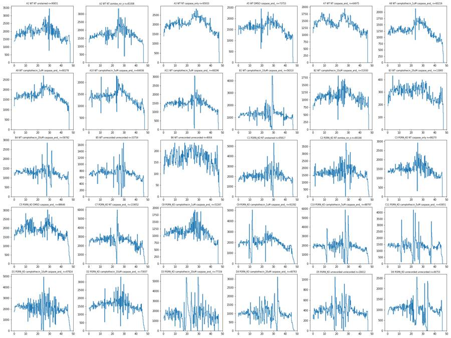
16
tool output
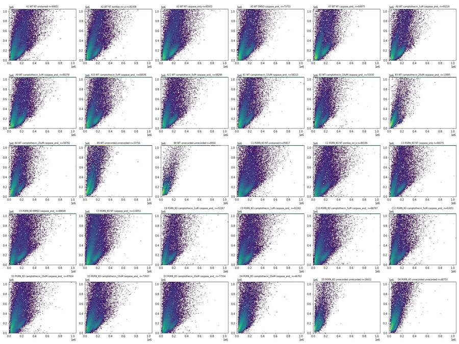
18
tool call · Read
{
"file_path": "/task/work/time_RL3-A.png"
}19
tool output
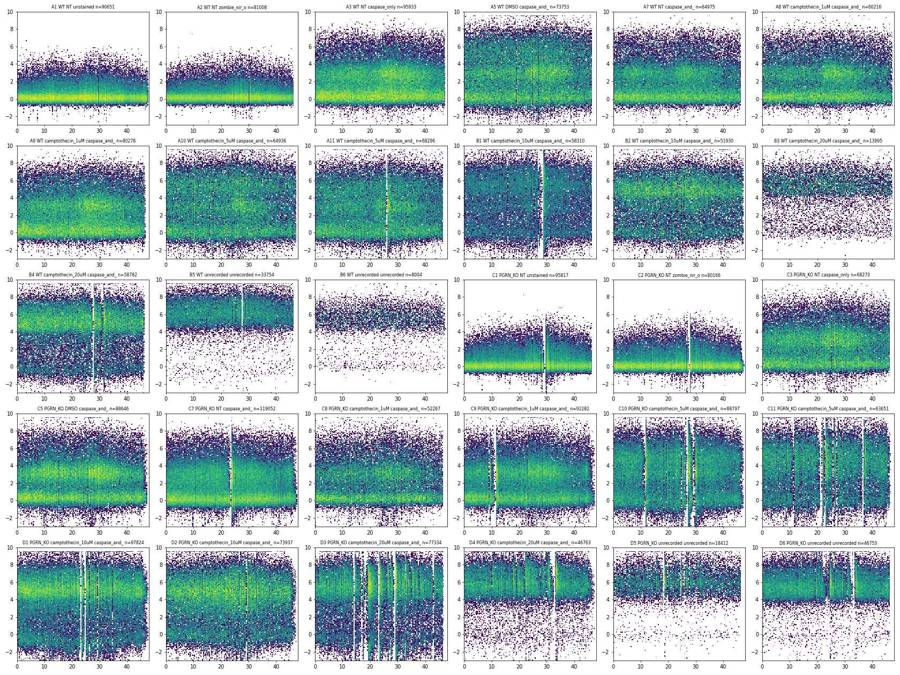
20
tool call · Read
{
"file_path": "/task/work/time_BL1-A.png"
}21
tool output
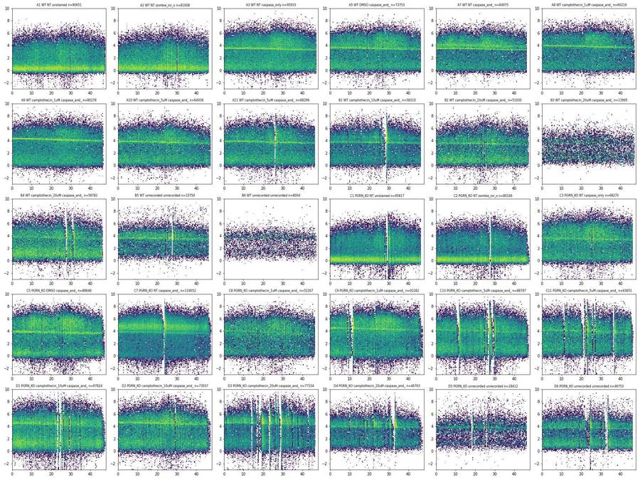
22
tool call · Read
{
"file_path": "/task/work/time_FSC-A.png"
}23
tool output
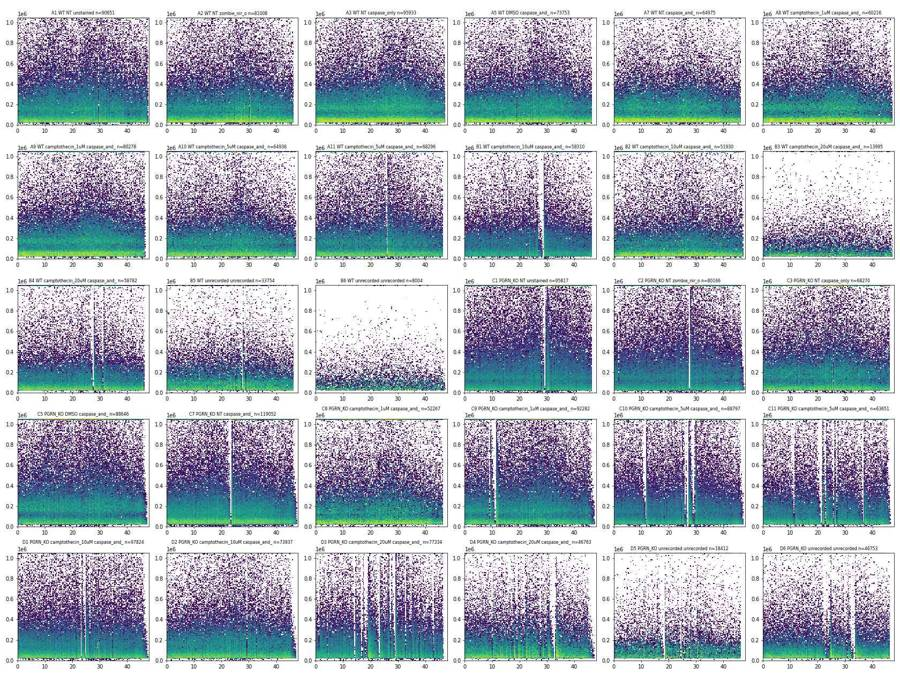
25
tool call · Read
{
"file_path": "/task/work/rl3_ssc.png"
}26
tool output
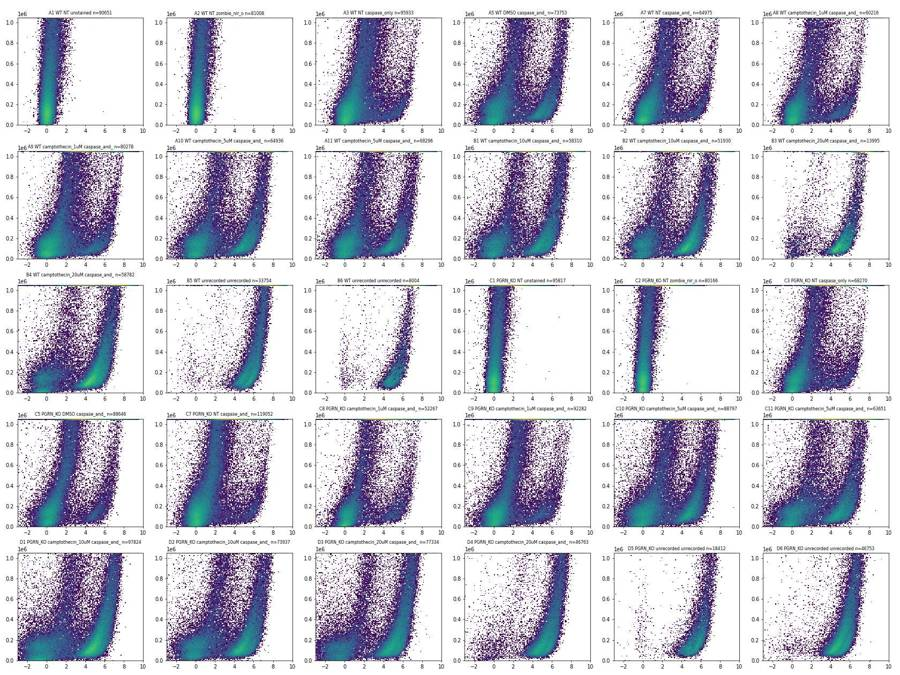
27
tool call · Read
{
"file_path": "/task/work/bl1_ssc.png"
}28
tool output
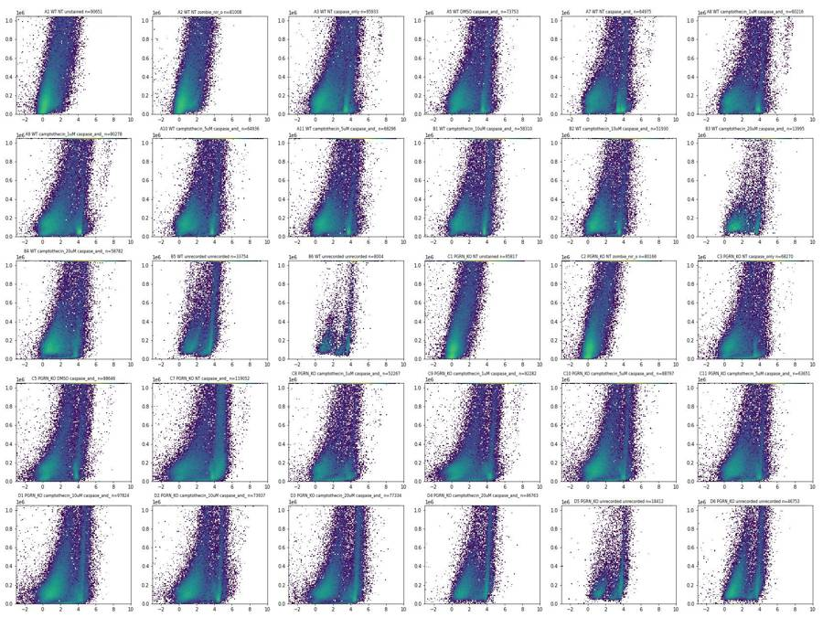
29
tool call · Read
{
"file_path": "/task/work/bl1_rl3.png"
}30
tool output
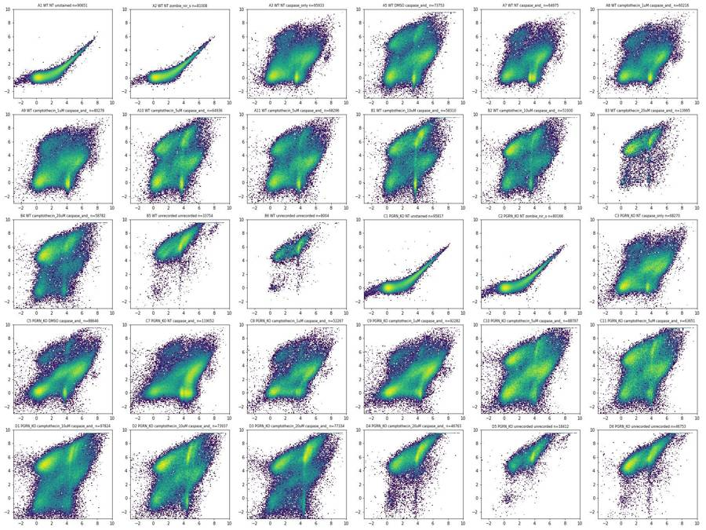
31
tool call · Read
{
"file_path": "/task/work/ssch_ssca.png"
}32
tool output
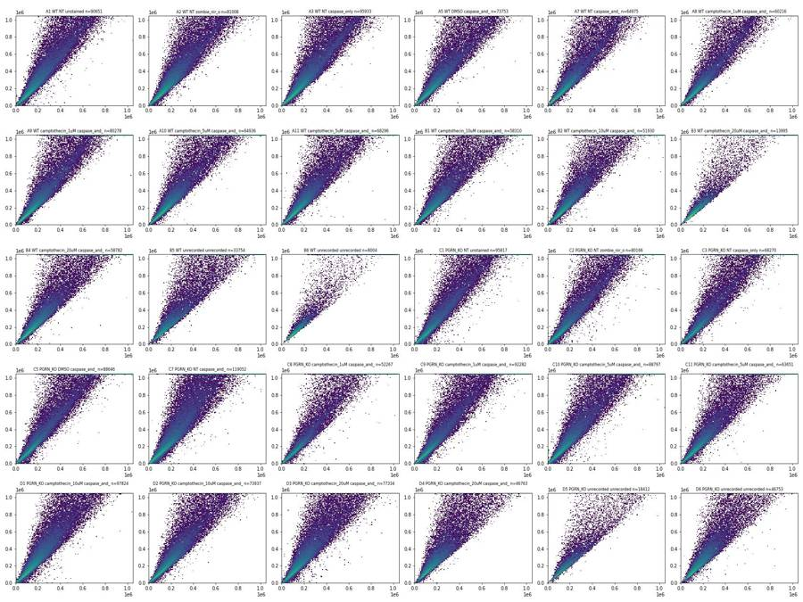
34
tool call · Bash
cd /task/work; cat > qc2.py <<'EOF'
import numpy as np, pandas as pd, pickle
D=pickle.load(open('D.pkl','rb'))
pd.set_option('display.width',250)
for w,d in D.items():
t=d['Time'].values; n=len(t)
dt=np.diff(t)
med=np.median(dt); mean=dt.mean()
# gaps > 0.1 s
gi=np.where(dt>0.1)[0]
gaps=[(round(t[i],2),round(dt[i],3)) for i in gi]
# rate in 0.1s bins
h,e=np.histogram(t,bins=np.arange(0,t.max()+0.1,0.1))
mr=np.median(h)
zero=(h==0).sum(); low=(h<0.25*mr).sum(); high=(h>2*mr).sum()
# tail: rate in last 3 s in 0.5 s bins relative to median
T=t.max()
tail=[int(((t>T-x-0.5)&(t<=T-x)).sum()/ (mr*5)*100) for x in np.arange(2.5,-0.1,-0.5)]
head=[int(((t>x)&(t<=x+0.5)).sum()/ (mr*5)*100) for x in np.arange(0,2,0.5)]
print(f"{w:4s} n={n:6d} T={T:.2f} medrate/s={mr*10:6.0f} zero_bins={zero:3d} low={low:3d} high={high:3d} head%={head} tail%={tail} gaps>0.1s={gaps}")
EOF
python qc2.py35
tool output
A1 n= 90651 T=47.48 medrate/s= 1840 zero_bins= 0 low= 2 high= 2 head%=[75, 83, 96, 89] tail%=[77, 75, 90, 95, 84, 73] gaps>0.1s=[] A2 n= 81008 T=46.25 medrate/s= 1680 zero_bins= 0 low= 7 high= 8 head%=[81, 89, 93, 96] tail%=[76, 79, 78, 81, 77, 66] gaps>0.1s=[] A3 n= 95933 T=47.10 medrate/s= 2030 zero_bins= 0 low= 1 high= 1 head%=[73, 83, 90, 95] tail%=[74, 80, 74, 68, 70, 73] gaps>0.1s=[] A5 n= 73753 T=46.30 medrate/s= 1590 zero_bins= 0 low= 4 high= 0 head%=[88, 100, 96, 104] tail%=[73, 77, 73, 72, 73, 81] gaps>0.1s=[] A7 n= 64975 T=46.24 medrate/s= 1410 zero_bins= 0 low= 0 high= 0 head%=[83, 89, 103, 97] tail%=[75, 79, 74, 74, 70, 80] gaps>0.1s=[] A8 n= 60216 T=47.27 medrate/s= 1280 zero_bins= 0 low= 1 high= 2 head%=[88, 95, 95, 95] tail%=[87, 67, 70, 58, 56, 32] gaps>0.1s=[] A9 n= 80278 T=46.41 medrate/s= 1720 zero_bins= 0 low= 2 high= 0 head%=[81, 89, 91, 91] tail%=[77, 79, 71, 66, 65, 69] gaps>0.1s=[] A10 n= 64936 T=47.21 medrate/s= 1370 zero_bins= 0 low= 4 high= 2 head%=[93, 98, 99, 107] tail%=[78, 77, 87, 69, 62, 56] gaps>0.1s=[(23.68, 0.108)] A11 n= 68296 T=46.35 medrate/s= 1450 zero_bins= 1 low= 6 high= 5 head%=[77, 90, 88, 100] tail%=[78, 71, 70, 72, 73, 72] gaps>0.1s=[(25.96, 0.182)] B1 n= 58310 T=46.33 medrate/s= 1235 zero_bins= 3 low= 19 high= 14 head%=[82, 84, 89, 96] tail%=[76, 73, 81, 77, 85, 95] gaps>0.1s=[(27.02, 0.114), (28.31, 0.485)] B2 n= 51930 T=47.16 medrate/s= 1095 zero_bins= 1 low= 10 high= 7 head%=[68, 76, 77, 86] tail%=[81, 77, 81, 80, 71, 96] gaps>0.1s=[(22.48, 0.128)] B3 n= 13995 T=47.22 medrate/s= 300 zero_bins= 0 low= 1 high= 0 head%=[76, 82, 93, 88] tail%=[87, 99, 94, 92, 74, 58] gaps>0.1s=[] B4 n= 58782 T=46.18 medrate/s= 1255 zero_bins= 2 low= 11 high= 6 head%=[96, 97, 101, 109] tail%=[80, 79, 74, 83, 88, 99] gaps>0.1s=[(27.66, 0.249)] B5 n= 33754 T=46.31 medrate/s= 720 zero_bins= 2 low= 10 high= 10 head%=[94, 96, 101, 99] tail%=[76, 68, 70, 69, 75, 86] gaps>0.1s=[(25.3, 0.114), (27.53, 0.317)] B6 n= 8004 T=47.38 medrate/s= 170 zero_bins= 0 low= 3 high= 0 head%=[70, 87, 82, 109] tail%=[89, 94, 96, 63, 47, 35] gaps>0.1s=[(47.02, 0.101)] C1 n= 95817 T=46.27 medrate/s= 1960 zero_bins= 2 low= 19 high= 19 head%=[78, 89, 94, 94] tail%=[100, 88, 76, 86, 67, 100] gaps>0.1s=[(25.0, 0.177), (29.15, 0.124), (29.28, 0.243)] C2 n= 80166 T=47.37 medrate/s= 1610 zero_bins= 2 low= 18 high= 13 head%=[92, 90, 120, 68] tail%=[98, 109, 99, 70, 47, 24] gaps>0.1s=[(26.54, 0.112), (27.58, 0.257)] C3 n= 68270 T=46.21 medrate/s= 1430 zero_bins= 0 low= 7 high= 6 head%=[95, 95, 95, 95] tail%=[86, 72, 74, 74, 82, 91] gaps>0.1s=[(25.04, 0.112)] C5 n= 88646 T=47.36 medrate/s= 1840 zero_bins= 0 low= 12 high= 3 head%=[81, 86, 101, 91] tail%=[92, 88, 70, 55, 27, 14] gaps>0.1s=[] C7 n=119052 T=47.42 medrate/s= 2540 zero_bins= 0 low= 17 high= 4 head%=[82, 99, 99, 106] tail%=[82, 89, 77, 60, 37, 22] gaps>0.1s=[(23.58, 0.104)] C8 n= 52267 T=46.21 medrate/s= 1100 zero_bins= 0 low= 8 high= 6 head%=[89, 95, 105, 97] tail%=[67, 66, 58, 66, 68, 78] gaps>0.1s=[] C9 n= 92282 T=47.37 medrate/s= 1900 zero_bins= 0 low= 23 high= 14 head%=[90, 90, 102, 105] tail%=[92, 70, 58, 37, 24, 14] gaps>0.1s=[(23.13, 0.14)] C10 n= 88797 T=47.17 medrate/s= 1830 zero_bins= 5 low= 27 high= 21 head%=[101, 105, 110, 112] tail%=[92, 91, 84, 69, 47, 28] gaps>0.1s=[(24.72, 0.125), (26.05, 0.191), (26.76, 0.334), (27.1, 0.172), (29.08, 0.137)] C11 n= 63651 T=46.43 medrate/s= 1360 zero_bins= 5 low= 32 high= 17 head%=[106, 109, 113, 105] tail%=[115, 124, 95, 99, 58, 37] gaps>0.1s=[(21.15, 0.359), (36.55, 0.258), (36.93, 0.121)] D1 n= 97824 T=47.42 medrate/s= 2090 zero_bins= 2 low= 41 high= 15 head%=[87, 106, 108, 108] tail%=[92, 102, 71, 56, 35, 18] gaps>0.1s=[(17.93, 0.135), (23.19, 0.258), (24.75, 0.116), (33.27, 0.101)] D2 n= 73937 T=47.29 medrate/s= 1540 zero_bins= 1 low= 19 high= 13 head%=[89, 87, 81, 93] tail%=[93, 88, 58, 40, 22, 10] gaps>0.1s=[(26.79, 0.119)] D3 n= 77334 T=46.43 medrate/s= 1600 zero_bins= 8 low= 51 high= 35 head%=[83, 93, 67, 121] tail%=[126, 83, 85, 78, 90, 85] gaps>0.1s=[(14.16, 0.22), (16.8, 0.137), (16.94, 0.167), (23.13, 0.171), (28.92, 0.229), (32.25, 0.101), (32.79, 0.198), (37.71, 0.197), (43.03, 0.289)] D4 n= 46763 T=47.20 medrate/s= 990 zero_bins= 2 low= 27 high= 13 head%=[94, 99, 104, 103] tail%=[86, 82, 55, 39, 19, 8] gaps>0.1s=[(32.64, 0.297)] D5 n= 18412 T=46.37 medrate/s= 380 zero_bins= 5 low= 16 high= 15 head%=[72, 61, 109, 98] tail%=[84, 71, 84, 87, 91, 106] gaps>0.1s=[(18.12, 0.31), (18.43, 0.145), (24.47, 0.162), (25.75, 0.271), (26.02, 0.12)] D6 n= 46753 T=46.24 medrate/s= 1020 zero_bins= 7 low= 28 high= 16 head%=[79, 92, 98, 106] tail%=[83, 86, 98, 103, 117, 90] gaps>0.1s=[(32.45, 0.251), (33.04, 0.285), (33.4, 0.357)]
37
agent
Still on quality control: zooming into the flow interruptions seen in several wells before fixing the gates.
38
tool call · Bash
cd /task/work; cat > zoom.py <<'EOF'
import numpy as np, pandas as pd, pickle, matplotlib
matplotlib.use('Agg'); import matplotlib.pyplot as plt
D=pickle.load(open('D.pkl','rb'))
def asinh(x,c=150): return np.arcsinh(x/c)
sel=[('B1',26,31),('D3',13,20),('C10',24,30.5),('D6',31,35),('C11',20,23),('A1',27,32)]
fig,axs=plt.subplots(5,len(sel),figsize=(4*len(sel),16))
for j,(w,a,b) in enumerate(sel):
d=D[w]; d=d[(d.Time>=a)&(d.Time<=b)]
h,e=np.histogram(d.Time,bins=np.arange(a,b+0.02,0.02)); axs[0,j].step(e[:-1],h*50); axs[0,j].set_title(f'{w} rate/s (20ms bins)')
for i,c in enumerate(['FSC-A','SSC-A','BL1-A','RL3-A']):
y=d[c].values
if c in('BL1-A','RL3-A'): y=asinh(y)
axs[i+1,j].plot(d.Time,y,',',alpha=0.6); axs[i+1,j].set_ylabel(c)
plt.tight_layout(); plt.savefig('zoom.png',dpi=65)
EOF
python zoom.py39
tool call · Read
{
"file_path": "/task/work/zoom.png"
}40
tool output
(Bash completed with no output)
41
tool output
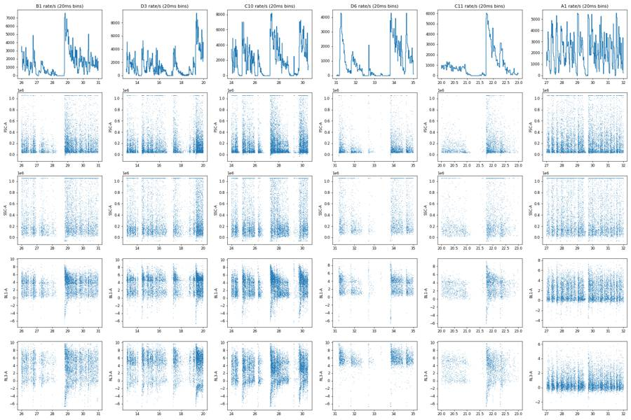
43
tool call · Bash
cd /task/work; cat > scat2.py <<'EOF'
import numpy as np, pandas as pd, pickle, matplotlib
matplotlib.use('Agg'); import matplotlib.pyplot as plt
D=pickle.load(open('D.pkl','rb'))
wells=['A1','A3','A7','A10','B2','C7','C10','D1']
fig,axs=plt.subplots(4,len(wells),figsize=(4*len(wells),16))
for j,w in enumerate(wells):
d=D[w]
cats={'all':np.ones(len(d),bool),'RL3>8000 (dead)':d['RL3-A']>8000,'RL3<3000 & BL1>6000':(d['RL3-A']<3000)&(d['BL1-A']>6000),'RL3<3000 & BL1<1000':(d['RL3-A']<3000)&(d['BL1-A']<1000)}
for i,(k,m) in enumerate(cats.items()):
ax=axs[i,j]
ax.hist2d(d['FSC-A'][m],d['SSC-A'][m],bins=120,range=[[0,6e5],[0,1.05e6]],norm=matplotlib.colors.LogNorm(),cmap='viridis')
ax.set_title(f'{w} {k} n={m.sum()}',fontsize=9)
plt.tight_layout(); plt.savefig('scat2.png',dpi=60)
EOF
python scat2.py44
tool call · Read
{
"file_path": "/task/work/scat2.png"
}45
tool output
(Bash completed with no output)
46
tool output
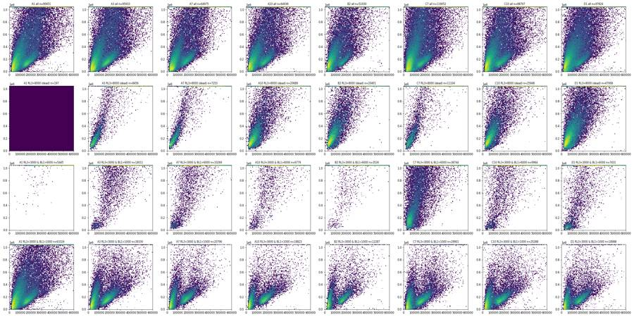
48
tool call · Bash
cd /task/work; cat > scat3.py <<'EOF'
import numpy as np, pandas as pd, pickle, matplotlib
matplotlib.use('Agg'); import matplotlib.pyplot as plt
D=pickle.load(open('D.pkl','rb'))
wells=['A1','A7','A10','B2','B5','C1','C7','D1','D6']
fig,axs=plt.subplots(3,len(wells),figsize=(4*len(wells),12))
for j,w in enumerate(wells):
d=D[w]
axs[0,j].hist2d(d['FSC-A'],d['SSC-A'],bins=150,range=[[0,4e5],[0,6e5]],cmap='viridis',norm=matplotlib.colors.PowerNorm(0.4)); axs[0,j].set_title(w)
axs[1,j].hist(d['FSC-A'],bins=200,range=(0,5e5)); axs[1,j].set_title('FSC-A')
axs[2,j].hist(d['FSC-A'][d['RL3-A']<3000],bins=200,range=(0,5e5),alpha=.6,label='RL3<3000'); axs[2,j].hist(d['FSC-A'][d['RL3-A']>8000],bins=200,range=(0,5e5),alpha=.6,label='RL3>8000');axs[2,j].legend()
plt.tight_layout(); plt.savefig('scat3.png',dpi=60)
EOF
python scat3.py49
tool call · Read
{
"file_path": "/task/work/scat3.png"
}50
tool output
(Bash completed with no output)
51
tool output
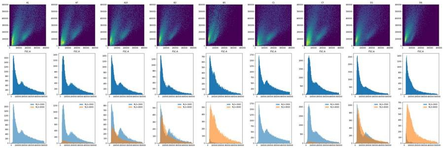
53
agent
Gate placement next: fitting the Cells ellipse and singlet polygon, then the fluorescence boundaries from the controls.
54
tool call · Bash
cd /task/work; cat > g1.py <<'EOF'
import numpy as np, pandas as pd, pickle, matplotlib
matplotlib.use('Agg'); import matplotlib.pyplot as plt
from matplotlib.patches import Ellipse
D=pickle.load(open('D.pkl','rb'))
# ellipse params
cx,cy,a,b,th=250e3,400e3,400e3,150e3,np.deg2rad(62)
def inell(x,y):
dx=x-cx; dy=y-cy
u= dx*np.cos(th)+dy*np.sin(th); v=-dx*np.sin(th)+dy*np.cos(th)
return (u/a)**2+(v/b)**2<=1
wells=['A1','A7','A10','B2','B5','C1','C7','D1','D6','B6']
fig,axs=plt.subplots(3,len(wells),figsize=(4*len(wells),12))
for j,w in enumerate(wells):
d=D[w]; m=inell(d['FSC-A'].values,d['SSC-A'].values)
for i,rng in enumerate([[[0,1.05e6],[0,1.05e6]],[[0,3e5],[0,3e5]]]):
axs[i,j].hist2d(d['FSC-A'],d['SSC-A'],bins=150,range=rng,cmap='viridis',norm=matplotlib.colors.PowerNorm(0.35))
axs[i,j].add_patch(Ellipse((cx,cy),2*a,2*b,angle=np.rad2deg(th),fill=False,ec='r'))
axs[i,j].set_xlim(rng[0]); axs[i,j].set_ylim(rng[1])
axs[0,j].set_title(f'{w} in={m.mean()*100:.1f}%')
c=d[m]; r=c['SSC-A']/c['SSC-H'].clip(lower=1)
axs[2,j].hist2d(c['SSC-H'],r,bins=150,range=[[0,1.05e6],[0.6,2.5]],cmap='viridis',norm=matplotlib.colors.LogNorm())
print(w, 'in%',round(m.mean()*100,1),'ratio pct 1,5,25,50,75,90,95,99:',np.round(np.percentile(r,[1,5,25,50,75,90,95,99]),3), 'SSC-H sat in cells %',round((c['SSC-H']>=1048575).mean()*100,2))
plt.tight_layout(); plt.savefig('g1.png',dpi=55)
EOF
python g1.py55
tool call · Read
{
"file_path": "/task/work/g1.png"
}56
tool output
A1 in% 46.9 ratio pct 1,5,25,50,75,90,95,99: [0.872 1.016 1.137 1.261 1.471 1.751 1.952 2.442] SSC-H sat in cells % 0.0 A7 in% 48.1 ratio pct 1,5,25,50,75,90,95,99: [0.946 1.023 1.133 1.233 1.408 1.684 1.899 2.447] SSC-H sat in cells % 0.0 A10 in% 52.2 ratio pct 1,5,25,50,75,90,95,99: [0.931 1.013 1.116 1.214 1.397 1.685 1.909 2.457] SSC-H sat in cells % 0.0 B2 in% 53.8 ratio pct 1,5,25,50,75,90,95,99: [0.942 1.024 1.125 1.231 1.41 1.679 1.9 2.458] SSC-H sat in cells % 0.0 B5 in% 49.6 ratio pct 1,5,25,50,75,90,95,99: [0.937 0.999 1.083 1.195 1.405 1.729 1.964 2.527] SSC-H sat in cells % 0.0 C1 in% 40.2 ratio pct 1,5,25,50,75,90,95,99: [0.787 0.981 1.118 1.227 1.427 1.706 1.918 2.396] SSC-H sat in cells % 0.0 C7 in% 42.5 ratio pct 1,5,25,50,75,90,95,99: [0.797 0.971 1.097 1.197 1.386 1.686 1.939 2.513] SSC-H sat in cells % 0.0 D1 in% 51.2 ratio pct 1,5,25,50,75,90,95,99: [0.862 1.006 1.123 1.245 1.449 1.732 1.966 2.518] SSC-H sat in cells % 0.0 D6 in% 55.5 ratio pct 1,5,25,50,75,90,95,99: [0.945 1.01 1.107 1.227 1.429 1.7 1.902 2.42 ] SSC-H sat in cells % 0.0 B6 in% 63.4 ratio pct 1,5,25,50,75,90,95,99: [0.983 1.019 1.1 1.203 1.39 1.671 1.863 2.395] SSC-H sat in cells % 0.0
57
tool output
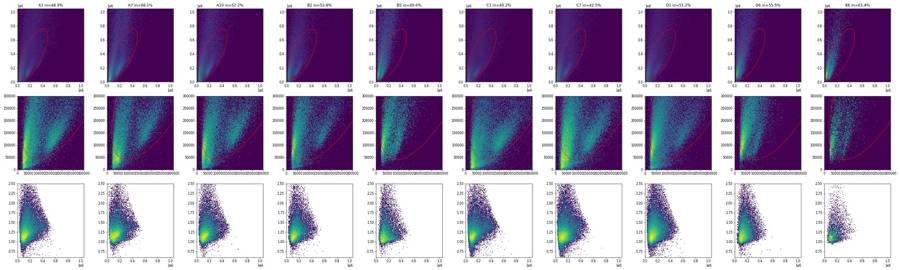
59
tool call · Bash
cd /task/work; cat > g2.py <<'EOF'
import numpy as np, pandas as pd, pickle, matplotlib
matplotlib.use('Agg'); import matplotlib.pyplot as plt
D=pickle.load(open('D.pkl','rb'))
def mk(cx,cy,a,b,deg):
th=np.deg2rad(deg)
def inell(x,y):
dx=x-cx; dy=y-cy
u= dx*np.cos(th)+dy*np.sin(th); v=-dx*np.sin(th)+dy*np.cos(th)
return (u/a)**2+(v/b)**2<=1
return inell
for P in [(250e3,400e3,400e3,150e3,62),(270e3,410e3,400e3,140e3,62),(280e3,420e3,410e3,145e3,62),(275e3,400e3,390e3,150e3,60)]:
f=mk(*P)
yy=np.array([50e3,75e3,100e3,150e3,200e3,300e3,500e3])
xs=np.arange(0,1.05e6,1e3)
edges=[]
for y in yy:
m=f(xs,np.full_like(xs,y)); edges.append((int(xs[m].min()/1e3),int(xs[m].max()/1e3)) if m.any() else None)
ys=np.arange(0,1.05e6,1e3)
ymax=max(y for y in ys if f(xs,np.full_like(xs,y)).any()); ymin=min(y for y in ys if f(xs,np.full_like(xs,y)).any())
print(P,'edges(k) at SSC 50,75,100,150,200,300,500k:',edges,'SSC range',ymin,ymax)
for w in ['A1','A7','B2','B5','C7','D1']:
d=D[w]; m=f(d['FSC-A'].values,d['SSC-A'].values)
dead=d['RL3-A']>8000; live=(d['RL3-A']<3000)
print(' ',w,'in% all %.1f dead %.1f RL3neg %.1f'%(m.mean()*100,m[dead].mean()*100 if dead.sum()>300 else np.nan,m[live].mean()*100))
f=mk(270e3,410e3,400e3,140e3,62)
fig,axs=plt.subplots(2,6,figsize=(24,8))
for j,w in enumerate(['A1','A7','B2','B5','C7','D1']):
d=D[w]; c=d[f(d['FSC-A'].values,d['SSC-A'].values)]; r=c['SSC-A']/c['SSC-H'].clip(lower=1)
axs[0,j].hist(r,bins=200,range=(0.7,2.6)); axs[0,j].set_title(w+' SSC-A/SSC-H in Cells')
axs[1,j].hist2d(c['SSC-H'],c['SSC-A'],bins=150,range=[[0,7e5],[0,9e5]],cmap='viridis',norm=matplotlib.colors.PowerNorm(0.35))
for k in (0.9,1.5): axs[1,j].plot([0,7e5],[0,7e5*k],'r',lw=.6)
plt.tight_layout(); plt.savefig('g2.png',dpi=60)
EOF
python g2.py60
tool call · Read
{
"file_path": "/task/work/g2.png"
}61
tool output (error)
Exit code 1
(250000.0, 400000.0, 400000.0, 150000.0, 62) edges(k) at SSC 50,75,100,150,200,300,500k: [(57, 135), (36, 178), (26, 210), (21, 260), (24, 300), (46, 366), (134, 454)] SSC range 40000.0 760000.0
Traceback (most recent call last):
File "/task/work/g2.py", line 24, in <module>
print(' ',w,'in% all %.1f dead %.1f RL3neg %.1f'%(m.mean()*100,m[dead].mean()*100 if dead.sum()>300 else np.nan,m[live].mean()*100))
~~~~~~~~~~~~~~~~~~~~~~~~~~~~~~~~~~~~^~~~~~~~~~~~~~~~~~~~~~~~~~~~~~~~~~~~~~~~~~~~~~~~~~~~~~~~~~~~~~~~~~~~~~~~~~~~~~~~~~~
TypeError: not enough arguments for format string62
tool output (error)
File does not exist. Note: your current working directory is /task/work. Did you mean g2.py?
63
tool call · Bash
cd /task/work; sed -i "s/'in% all %.1f dead %.1f RL3neg %.1f'%(m.mean()\*100,m\[dead\].mean()\*100 if dead.sum()>300 else np.nan,m\[live\].mean()\*100)/'in%% all %.1f dead %.1f RL3neg %.1f'%(m.mean()*100,(m[dead].mean()*100 if dead.sum()>300 else np.nan),m[live].mean()*100)/" g2.py; python g2.py
64
tool call · Read
{
"file_path": "/task/work/g2.png"
}65
tool output
(250000.0, 400000.0, 400000.0, 150000.0, 62) edges(k) at SSC 50,75,100,150,200,300,500k: [(57, 135), (36, 178), (26, 210), (21, 260), (24, 300), (46, 366), (134, 454)] SSC range 40000.0 760000.0
A1 in% all 46.9 dead nan RL3neg 47.4
A7 in% all 48.1 dead 39.7 RL3neg 52.3
B2 in% all 53.8 dead 55.0 RL3neg 52.5
B5 in% all 49.6 dead 48.6 RL3neg 47.4
C7 in% all 42.5 dead 26.3 RL3neg 48.3
D1 in% all 51.2 dead 52.3 RL3neg 51.0
(270000.0, 410000.0, 400000.0, 140000.0, 62) edges(k) at SSC 50,75,100,150,200,300,500k: [None, (63, 175), (52, 208), (46, 260), (49, 301), (72, 368), (160, 461)] SSC range 51000.0 769000.0
A1 in% all 35.1 dead nan RL3neg 35.5
A7 in% all 34.8 dead 27.0 RL3neg 38.2
B2 in% all 35.3 dead 37.9 RL3neg 38.7
B5 in% all 32.3 dead 33.6 RL3neg 24.1
C7 in% all 30.3 dead 18.1 RL3neg 34.6
D1 in% all 34.1 dead 35.5 RL3neg 38.4
(280000.0, 420000.0, 410000.0, 145000.0, 62) edges(k) at SSC 50,75,100,150,200,300,500k: [None, (69, 181), (57, 216), (49, 268), (52, 310), (74, 378), (159, 473)] SSC range 52000.0 788000.0
A1 in% all 33.9 dead nan RL3neg 34.3
A7 in% all 33.2 dead 25.6 RL3neg 36.5
B2 in% all 33.4 dead 35.6 RL3neg 37.3
B5 in% all 30.3 dead 31.7 RL3neg 22.4
C7 in% all 28.9 dead 17.2 RL3neg 32.9
D1 in% all 32.2 dead 33.3 RL3neg 37.2
(275000.0, 400000.0, 390000.0, 150000.0, 60) edges(k) at SSC 50,75,100,150,200,300,500k: [None, (65, 180), (51, 218), (41, 274), (44, 319), (67, 389), (161, 483)] SSC range 55000.0 745000.0
A1 in% all 36.6 dead nan RL3neg 37.0
A7 in% all 35.9 dead 29.3 RL3neg 39.2
B2 in% all 37.8 dead 41.4 RL3neg 40.2
B5 in% all 34.5 dead 35.8 RL3neg 26.4
C7 in% all 31.8 dead 19.5 RL3neg 36.2
D1 in% all 36.2 dead 38.4 RL3neg 39.566
tool output
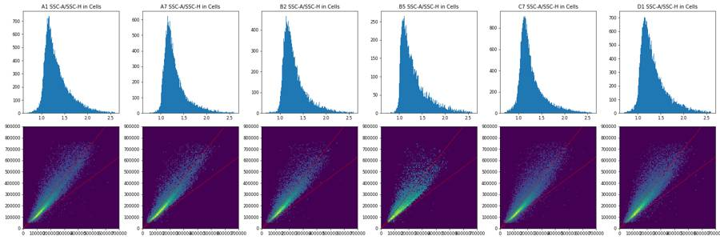
68
tool call · Bash
cd /task/work; cat > g3.py <<'EOF'
import numpy as np, pandas as pd, pickle, matplotlib
matplotlib.use('Agg'); import matplotlib.pyplot as plt
from matplotlib.patches import Ellipse
D=pickle.load(open('D.pkl','rb'))
P=(285e3,400e3,400e3,160e3,60)
cx,cy,a,b,deg=P; th=np.deg2rad(deg)
def f(x,y):
dx=x-cx; dy=y-cy
u= dx*np.cos(th)+dy*np.sin(th); v=-dx*np.sin(th)+dy*np.cos(th)
return (u/a)**2+(v/b)**2<=1
xs=np.arange(0,1.05e6,1e3)
for y in [50e3,60e3,75e3,100e3,150e3,200e3,300e3,500e3,700e3]:
m=f(xs,np.full_like(xs,y)); print(int(y/1e3),(xs[m].min()/1e3,xs[m].max()/1e3) if m.any() else None)
wells=['A1','A7','A10','B2','B5','C7','D1','D6']
fig,axs=plt.subplots(2,len(wells),figsize=(4*len(wells),8))
for j,w in enumerate(wells):
d=D[w]; m=f(d['FSC-A'].values,d['SSC-A'].values)
ll=(d['RL3-A']<3000)&(d['BL1-A']<1000)&(d['FSC-A']>90e3)&(d['SSC-A']<1e6)
dead=d['RL3-A']>8000
for i,rng in enumerate([[[0,1.05e6],[0,1.05e6]],[[0,4e5],[0,4e5]]]):
axs[i,j].hist2d(d['FSC-A'],d['SSC-A'],bins=150,range=rng,cmap='viridis',norm=matplotlib.colors.PowerNorm(0.35))
axs[i,j].add_patch(Ellipse((cx,cy),2*a,2*b,angle=deg,fill=False,ec='r'))
axs[i,j].set_xlim(rng[0]); axs[i,j].set_ylim(rng[1])
axs[0,j].set_title(f'{w} in={m.mean()*100:.1f}% liveLobe={m[ll].mean()*100:.0f}% dead={m[dead].mean()*100:.0f}%')
plt.tight_layout(); plt.savefig('g3.png',dpi=55)
EOF
python g3.py69
tool call · Read
{
"file_path": "/task/work/g3.png"
}70
tool output
50 (93.0, 155.0) 60 (76.0, 181.0) 75 (63.0, 208.0) 100 (51.0, 243.0) 150 (42.0, 297.0) 200 (45.0, 341.0) 300 (67.0, 411.0) 500 (159.0, 503.0) 700 (327.0, 519.0)
71
tool output
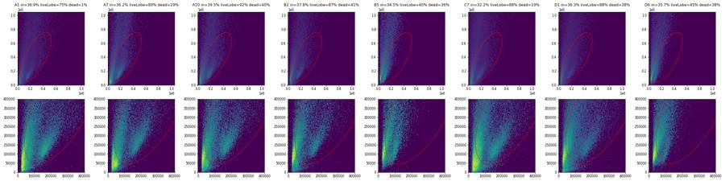
73
tool call · Bash
cd /task/work; cat > g4.py <<'EOF'
import numpy as np, pandas as pd, pickle, matplotlib
matplotlib.use('Agg'); import matplotlib.pyplot as plt
from matplotlib.path import Path
D=pickle.load(open('D.pkl','rb'))
lay=pd.read_csv('/task/inputs/plate_layout.csv').set_index('well')
cx,cy,a,b,deg=(285e3,400e3,400e3,160e3,60); th=np.deg2rad(deg)
def cells(d):
dx=d['FSC-A'].values-cx; dy=d['SSC-A'].values-cy
u= dx*np.cos(th)+dy*np.sin(th); v=-dx*np.sin(th)+dy*np.cos(th)
return (u/a)**2+(v/b)**2<=1
poly=Path([(20e3,18e3),(800e3,720e3),(540e3,810e3),(20e3,30e3)])
def sing(d): return poly.contains_points(d[['SSC-H','SSC-A']].values)
S={}
for w,d in D.items():
c=cells(d); s=c&sing(d); S[w]=d[s]
print(w,len(d),c.sum(),s.sum(),round(c.mean()*100,1),round(s.sum()/c.sum()*100,1))
pickle.dump(S,open('S.pkl','wb'))
def asinh(x,c=150): return np.arcsinh(x/c)
wells=list(lay.index)
for ch in ['RL3-A','BL1-A']:
fig,axs=plt.subplots(5,6,figsize=(24,16))
for ax,w in zip(axs.ravel(),wells):
ax.hist(asinh(S[w][ch]),bins=200,range=(-3,10),histtype='step',color='k')
ref='A1' if lay.loc[w,'genotype']=='WT' else 'C1'
ax2=ax.twinx(); ax2.hist(asinh(S[ref][ch]),bins=200,range=(-3,10),histtype='step',color='r',alpha=.5); ax2.set_yticks([])
ax.set_yscale('log'); ax.set_title(f"{w} {lay.loc[w,'treatment']} {lay.loc[w,'stain'][:12]}",fontsize=8)
for v in (1000,3000,10000): ax.axvline(asinh(v),color='g',lw=.4)
plt.tight_layout(); plt.savefig(f'hist_{ch}.png',dpi=60); plt.close()
for w in ['A1','C1','A2','C2','A3','C3','A7','C7']:
r=S[w]['RL3-A']; b1=S[w]['BL1-A']
print(w,'RL3 pct 50,90,95,99,99.5,99.9',np.percentile(r,[50,90,95,99,99.5,99.9]).round(0),'BL1',np.percentile(b1,[50,90,95,99,99.5,99.9]).round(0), '%RL3>5000 %.2f >10000 %.2f'%((r>5000).mean()*100,(r>10000).mean()*100))
EOF
python g4.py74
tool call · Read
{
"file_path": "/task/work/hist_RL3-A.png"
}75
tool output (error)
Exit code 1
A1 90651 33421 24798 36.9 74.2
A2 81008 30406 22833 37.5 75.1
A3 95933 35918 28412 37.4 79.1
A5 73753 26552 20905 36.0 78.7
A7 64975 23495 18870 36.2 80.3
A8 60216 21258 17682 35.3 83.2
A9 80278 32323 26697 40.3 82.6
A10 64936 25668 20392 39.5 79.4
A11 68296 26027 20721 38.1 79.6
B1 58310 21594 16943 37.0 78.5
B2 51930 19623 15410 37.8 78.5
B3 13995 6367 5166 45.5 81.1
B4 58782 23291 18884 39.6 81.1
B5 33754 11647 9024 34.5 77.5
B6 8004 3541 2830 44.2 79.9
C1 95817 31704 24133 33.1 76.1
C2 80166 27215 20980 33.9 77.1
C3 68270 21684 17308 31.8 79.8
C5 88646 29041 22905 32.8 78.9
C7 119052 38301 30193 32.2 78.8
C8 52267 15825 12878 30.3 81.4
C9 92282 29654 23373 32.1 78.8
C10 88797 30475 23563 34.3 77.3
C11 63651 22667 18028 35.6 79.5
D1 97824 35526 26448 36.3 74.4
D2 73937 28962 22900 39.2 79.1
D3 77334 27879 20231 36.1 72.6
D4 46763 17782 12844 38.0 72.2
D5 18412 7272 5914 39.5 81.3
D6 46753 16709 12701 35.7 76.0
Traceback (most recent call last):
File "/task/work/g4.py", line 31, in <module>
print(w,'RL3 pct 50,90,95,99,99.5,99.9',np.percentile(r,[50,90,95,99,99.5,99.9]).round(0),'BL1',np.percentile(b1,[50,90,95,99,99.5,99.9]).round(0), '%RL3>5000 %.2f >10000 %.2f'%((r>5000).mean()*100,(r>10000).mean()*100))
~~~~~~~~~~~~~~~~~~~~~~~~~~~~^~~~~~~~~~~~~~~~~~~~~~~~~~~~~~~~~~~~~~~~~~~
ValueError: unsupported format character 'R' (0x52) at index 176
tool output
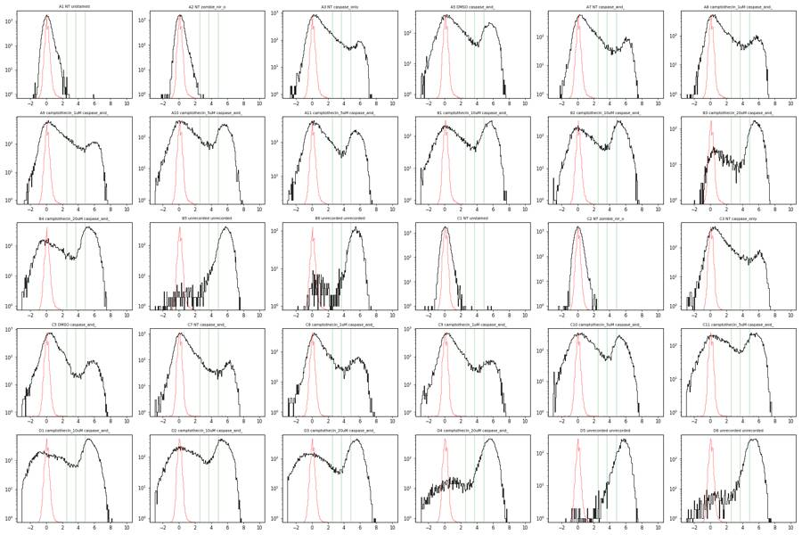
78
agent
Scatter gates are set; now placing the Zombie NIR and caspase boundaries from the fluorescence histograms.
79
tool call · Bash
cd /task/work; cat > g5.py <<'EOF'
import numpy as np, pandas as pd, pickle
from scipy.ndimage import gaussian_filter1d
S=pickle.load(open('S.pkl','rb'))
def asinh(x,c=150): return np.arcsinh(x/c)
vals=[]
for w,d in S.items():
r=d['RL3-A'].values; b1=d['BL1-A'].values
h,e=np.histogram(asinh(r),bins=130,range=(-3,10)); hs=gaussian_filter1d(h.astype(float),2.5)
cen=(e[:-1]+e[1:])/2; m=(cen>2.5)&(cen<5.2); i=np.argmin(hs[m]); v=150*np.sinh(cen[m][i]); vals.append(v)
print(w,len(d),'valley RL3≈%.0f'%v,'| pct>2000 %.1f >3000 %.1f >4000 %.1f >5000 %.1f >8000 %.1f'%tuple((r>t).mean()*100 for t in (2000,3000,4000,5000,8000)),
'| RL3 p99 %.0f p99.9 %.0f'%tuple(np.percentile(r,[99,99.9])),'| BL1 p50 %.0f p95 %.0f p99 %.0f p99.5 %.0f p99.9 %.0f'%tuple(np.percentile(b1,[50,95,99,99.5,99.9])))
print(np.median(vals))
EOF
python g5.py80
tool call · Read
{
"file_path": "/task/work/hist_BL1-A.png"
}81
tool output
A1 24798 valley RL3≈3894 | pct>2000 0.0 >3000 0.0 >4000 0.0 >5000 0.0 >8000 0.0 | RL3 p99 289 p99.9 652 | BL1 p50 84 p95 929 p99 2156 p99.5 2693 p99.9 4506 A2 22833 valley RL3≈4756 | pct>2000 0.0 >3000 0.0 >4000 0.0 >5000 0.0 >8000 0.0 | RL3 p99 250 p99.9 529 | BL1 p50 105 p95 922 p99 1872 p99.5 2403 p99.9 4171 A3 28412 valley RL3≈7843 | pct>2000 12.3 >3000 10.4 >4000 9.3 >5000 8.6 >8000 7.3 | RL3 p99 46378 p99.9 73596 | BL1 p50 298 p95 4581 p99 7846 p99.5 10207 p99.9 20039 A5 20905 valley RL3≈3523 | pct>2000 30.3 >3000 28.8 >4000 27.9 >5000 27.2 >8000 24.9 | RL3 p99 62722 p99.9 95542 | BL1 p50 391 p95 5214 p99 9051 p99.5 11245 p99.9 17125 A7 18870 valley RL3≈6421 | pct>2000 14.5 >3000 13.0 >4000 12.1 >5000 11.5 >8000 10.3 | RL3 p99 61762 p99.9 92387 | BL1 p50 509 p95 5536 p99 9593 p99.5 11331 p99.9 18774 A8 17682 valley RL3≈4756 | pct>2000 17.8 >3000 15.9 >4000 14.9 >5000 14.0 >8000 12.2 | RL3 p99 52714 p99.9 78925 | BL1 p50 476 p95 6219 p99 11851 p99.5 15068 p99.9 30059 A9 26697 valley RL3≈7097 | pct>2000 18.6 >3000 16.3 >4000 14.9 >5000 14.0 >8000 12.1 | RL3 p99 61755 p99.9 94603 | BL1 p50 454 p95 6933 p99 13193 p99.5 17972 p99.9 38888 A10 20392 valley RL3≈3523 | pct>2000 36.1 >3000 34.2 >4000 33.1 >5000 32.2 >8000 29.7 | RL3 p99 66348 p99.9 112167 | BL1 p50 420 p95 5875 p99 10580 p99.5 13568 p99.9 24488 A11 20721 valley RL3≈2884 | pct>2000 31.1 >3000 29.7 >4000 28.7 >5000 27.8 >8000 25.0 | RL3 p99 58482 p99.9 87519 | BL1 p50 377 p95 6016 p99 11520 p99.5 15288 p99.9 29892 B1 16943 valley RL3≈2609 | pct>2000 46.3 >3000 44.7 >4000 43.6 >5000 42.4 >8000 38.4 | RL3 p99 68003 p99.9 104573 | BL1 p50 549 p95 5835 p99 9980 p99.5 13051 p99.9 22400 B2 15410 valley RL3≈1931 | pct>2000 50.2 >3000 48.4 >4000 47.1 >5000 45.5 >8000 39.1 | RL3 p99 65528 p99.9 100319 | BL1 p50 337 p95 4588 p99 8153 p99.5 11462 p99.9 21660 B3 5166 valley RL3≈1931 | pct>2000 81.0 >3000 79.9 >4000 78.9 >5000 78.1 >8000 73.5 | RL3 p99 73935 p99.9 105028 | BL1 p50 894 p95 5650 p99 10880 p99.5 15141 p99.9 25015 B4 18884 valley RL3≈1931 | pct>2000 62.3 >3000 60.9 >4000 59.6 >5000 58.1 >8000 50.7 | RL3 p99 62253 p99.9 90703 | BL1 p50 477 p95 5470 p99 10354 p99.5 14166 p99.9 26156 B5 9024 valley RL3≈955 | pct>2000 97.9 >3000 97.4 >4000 96.8 >5000 96.1 >8000 93.1 | RL3 p99 83030 p99.9 111943 | BL1 p50 1858 p95 4473 p99 6451 p99.5 7865 p99.9 14536 B6 2830 valley RL3≈955 | pct>2000 93.8 >3000 92.8 >4000 91.8 >5000 90.7 >8000 82.7 | RL3 p99 58302 p99.9 80789 | BL1 p50 1845 p95 4409 p99 6940 p99.5 10539 p99.9 20197 C1 24133 valley RL3≈5810 | pct>2000 0.0 >3000 0.0 >4000 0.0 >5000 0.0 >8000 0.0 | RL3 p99 186 p99.9 419 | BL1 p50 57 p95 516 p99 1117 p99.5 1458 p99.9 2387 C2 20980 valley RL3≈2360 | pct>2000 0.0 >3000 0.0 >4000 0.0 >5000 0.0 >8000 0.0 | RL3 p99 186 p99.9 403 | BL1 p50 58 p95 529 p99 1125 p99.5 1433 p99.9 2486 C3 17308 valley RL3≈9580 | pct>2000 15.5 >3000 13.6 >4000 12.4 >5000 11.4 >8000 9.7 | RL3 p99 57938 p99.9 91354 | BL1 p50 270 p95 4889 p99 9551 p99.5 11816 p99.9 17874 C5 22905 valley RL3≈3894 | pct>2000 10.1 >3000 9.5 >4000 9.1 >5000 8.8 >8000 8.1 | RL3 p99 50126 p99.9 91580 | BL1 p50 268 p95 5733 p99 10395 p99.5 12813 p99.9 21964 C7 30193 valley RL3≈8668 | pct>2000 9.1 >3000 8.2 >4000 7.5 >5000 7.1 >8000 6.3 | RL3 p99 56441 p99.9 97972 | BL1 p50 1545 p95 11368 p99 16705 p99.5 19671 p99.9 28791 C8 12878 valley RL3≈4304 | pct>2000 17.1 >3000 15.6 >4000 14.7 >5000 14.2 >8000 12.6 | RL3 p99 59093 p99.9 92113 | BL1 p50 446 p95 5823 p99 10040 p99.5 13296 p99.9 22335 C9 23373 valley RL3≈4304 | pct>2000 11.8 >3000 10.7 >4000 10.0 >5000 9.6 >8000 8.3 | RL3 p99 50341 p99.9 91933 | BL1 p50 373 p95 8140 p99 14575 p99.5 19927 p99.9 41222 C10 23563 valley RL3≈2609 | pct>2000 33.9 >3000 32.4 >4000 31.3 >5000 30.3 >8000 26.6 | RL3 p99 61843 p99.9 102628 | BL1 p50 385 p95 6342 p99 12063 p99.5 16338 p99.9 31311 C11 18028 valley RL3≈2609 | pct>2000 43.7 >3000 41.4 >4000 39.7 >5000 38.3 >8000 33.6 | RL3 p99 70132 p99.9 100934 | BL1 p50 571 p95 6499 p99 12004 p99.5 16044 p99.9 31271 D1 26448 valley RL3≈2360 | pct>2000 55.4 >3000 53.9 >4000 52.8 >5000 51.5 >8000 46.4 | RL3 p99 69258 p99.9 113343 | BL1 p50 501 p95 8637 p99 14846 p99.5 19030 p99.9 34618 D2 22900 valley RL3≈2360 | pct>2000 50.6 >3000 48.9 >4000 47.4 >5000 46.0 >8000 40.9 | RL3 p99 74041 p99.9 108023 | BL1 p50 606 p95 10016 p99 19846 p99.5 27302 p99.9 45295 D3 20231 valley RL3≈1931 | pct>2000 56.5 >3000 55.3 >4000 54.4 >5000 53.0 >8000 47.8 | RL3 p99 64818 p99.9 101216 | BL1 p50 740 p95 11025 p99 17747 p99.5 23967 p99.9 44214 D4 12844 valley RL3≈955 | pct>2000 91.4 >3000 90.6 >4000 89.3 >5000 87.9 >8000 81.4 | RL3 p99 73593 p99.9 111916 | BL1 p50 1475 p95 5863 p99 8751 p99.5 11262 p99.9 20948 D5 5914 valley RL3≈955 | pct>2000 98.5 >3000 97.8 >4000 96.7 >5000 95.3 >8000 90.3 | RL3 p99 74676 p99.9 104932 | BL1 p50 2355 p95 4877 p99 6776 p99.5 7499 p99.9 13528 D6 12701 valley RL3≈955 | pct>2000 96.9 >3000 96.0 >4000 94.6 >5000 92.9 >8000 81.9 | RL3 p99 59256 p99.9 84952 | BL1 p50 789 p95 4751 p99 7209 p99.5 8480 p99.9 13772 2746.2475413075445
82
tool output
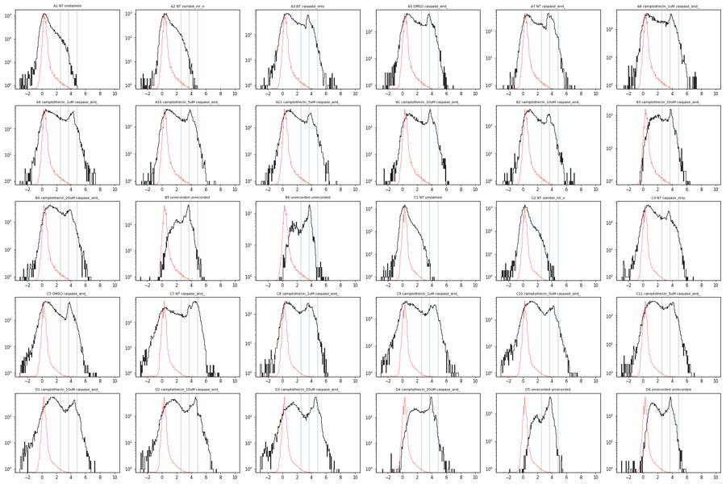
84
tool call · Bash
cd /task/work; cat > g6.py <<'EOF'
import numpy as np, pandas as pd, pickle, matplotlib
matplotlib.use('Agg'); import matplotlib.pyplot as plt
S=pickle.load(open('S.pkl','rb'))
L={w:d[(d['RL3-A']<3500)&(d['RL3-A']>-2000)] for w,d in S.items()}
for w in ['A1','A2','C1','C2']:
b=L[w]['BL1-A']; print(w,len(b),' '.join('%%>%d: %.2f'%(t,(b>t).mean()*100) for t in (1000,1500,2000,2500,3000,4000,6000)))
for w in ['A3','A7','A5','C3','C7','C5','B4','D1']:
b=L[w]['BL1-A']; print(w,len(b),' '.join('%%>%d: %.1f'%(t,(b>t).mean()*100) for t in (1000,1500,2000,2500,3000,4000,6000)))
wells=['A1','A2','A3','A5','A7','A10','B4','B5','C1','C2','C3','C5','C7','C10','D1','D6']
fig,axs=plt.subplots(4,len(wells)//2,figsize=(32,16))
for j,w in enumerate(wells):
r,c=divmod(j,len(wells)//2)
d=L[w]
axs[2*r,c].hist(d['BL1-A'],bins=160,range=(-500,7500)); axs[2*r,c].set_title(w+' Live BL1 linear n=%d'%len(d))
for v in (2000,2500): axs[2*r,c].axvline(v,color='r',lw=.5)
axs[2*r+1,c].hist2d(np.arcsinh(d['BL1-A']/150),d['SSC-A'],bins=120,range=[[-2,8],[0,8e5]],cmap='viridis',norm=matplotlib.colors.LogNorm())
for v in (2000,2500): axs[2*r+1,c].axvline(np.arcsinh(v/150),color='r',lw=.5)
plt.tight_layout(); plt.savefig('g6.png',dpi=50)
EOF
python g6.py85
tool call · Read
{
"file_path": "/task/work/g6.png"
}86
tool output
A1 24797 %>1000: 4.43 %>1500: 2.22 %>2000: 1.16 %>2500: 0.71 %>3000: 0.33 %>4000: 0.14 %>6000: 0.05 A2 22833 %>1000: 4.21 %>1500: 1.73 %>2000: 0.88 %>2500: 0.44 %>3000: 0.24 %>4000: 0.13 %>6000: 0.02 C1 24131 %>1000: 1.31 %>1500: 0.47 %>2000: 0.16 %>2500: 0.09 %>3000: 0.04 %>4000: 0.01 %>6000: 0.00 C2 20980 %>1000: 1.35 %>1500: 0.44 %>2000: 0.21 %>2500: 0.10 %>3000: 0.07 %>4000: 0.03 %>6000: 0.00 A3 25618 %>1000: 29.6 %>1500: 25.4 %>2000: 22.6 %>2500: 17.3 %>3000: 11.7 %>4000: 6.8 %>6000: 2.3 A7 16518 %>1000: 40.9 %>1500: 37.1 %>2000: 34.1 %>2500: 26.9 %>3000: 20.8 %>4000: 12.2 %>6000: 4.0 A5 14957 %>1000: 30.8 %>1500: 27.0 %>2000: 24.3 %>2500: 18.8 %>3000: 12.6 %>4000: 7.5 %>6000: 2.9 C3 15062 %>1000: 25.9 %>1500: 22.2 %>2000: 19.4 %>2500: 14.6 %>3000: 10.9 %>4000: 7.4 %>6000: 3.7 C7 27811 %>1000: 54.3 %>1500: 51.5 %>2000: 49.7 %>2500: 47.7 %>3000: 43.8 %>4000: 37.4 %>6000: 25.7 C5 20762 %>1000: 28.3 %>1500: 25.0 %>2000: 23.2 %>2500: 21.3 %>3000: 17.0 %>4000: 9.1 %>6000: 4.3 B4 7475 %>1000: 30.1 %>1500: 26.4 %>2000: 23.6 %>2500: 19.3 %>3000: 14.8 %>4000: 8.7 %>6000: 4.7 D1 12251 %>1000: 30.9 %>1500: 26.9 %>2000: 24.7 %>2500: 22.7 %>3000: 20.2 %>4000: 15.0 %>6000: 8.4
87
tool output
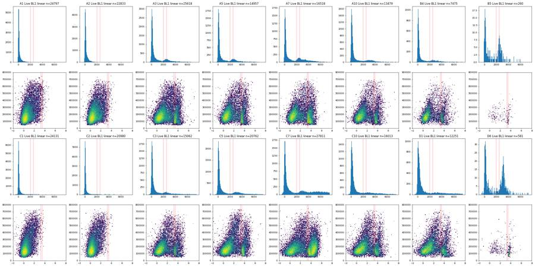
89
tool call · Bash
cd /task/work; cat > g7.py <<'EOF'
import numpy as np, pandas as pd, pickle
from scipy.ndimage import gaussian_filter1d
S=pickle.load(open('S.pkl','rb'))
L={w:d[(d['RL3-A']<3500)&(d['RL3-A']>-2000)] for w,d in S.items()}
vs=[]
for w,d in L.items():
if w in('A1','A2','C1','C2'): continue
b=d['BL1-A'].values
h,e=np.histogram(b,bins=np.arange(0,6000,100)); hs=gaussian_filter1d(h.astype(float),1.5); cen=e[:-1]+50
m=(cen>800)&(cen<2600); v=cen[m][np.argmin(hs[m])]; pk=cen[(cen>v)][np.argmax(hs[cen>v])]
vs.append(v); print(w,len(b),'valley',v,'peak',pk, 'valley/peak height %.2f'%(hs[m].min()/hs[cen>v].max()))
print('median valley',np.median(vs))
pool=np.concatenate([d['BL1-A'].values for w,d in L.items() if w not in('A1','A2','C1','C2')])
h,e=np.histogram(pool,bins=np.arange(0,6000,100)); print(list(zip((e[:-1]).astype(int),h)))
EOF
python g7.py90
tool output
A3 25618 valley 1750 peak 2550 valley/peak height 0.43 A5 14957 valley 1850 peak 2550 valley/peak height 0.40 A7 16518 valley 1650 peak 2450 valley/peak height 0.35 A8 14978 valley 2350 peak 3350 valley/peak height 0.62 A9 22541 valley 2350 peak 3750 valley/peak height 0.71 A10 13479 valley 2050 peak 2950 valley/peak height 0.61 A11 14656 valley 2050 peak 2950 valley/peak height 0.56 B1 9401 valley 1950 peak 3050 valley/peak height 0.27 B2 8055 valley 1650 peak 2350 valley/peak height 0.50 B3 1063 valley 2350 peak 3050 valley/peak height 0.31 B4 7475 valley 1650 peak 2450 valley/peak height 0.59 B5 260 valley 1850 peak 2550 valley/peak height 0.20 B6 219 valley 1250 peak 2950 valley/peak height 0.08 C3 15062 valley 1750 peak 2350 valley/peak height 0.54 C5 20762 valley 1950 peak 3050 valley/peak height 0.33 C7 27811 valley 1750 peak 2950 valley/peak height 0.45 C8 10924 valley 1950 peak 2450 valley/peak height 0.75 C9 20935 valley 2250 peak 3550 valley/peak height 0.74 C10 16013 valley 2150 peak 2850 valley/peak height 0.83 C11 10683 valley 1950 peak 2850 valley/peak height 0.69 D1 12251 valley 2150 peak 3350 valley/peak height 0.70 D2 11845 valley 2250 peak 3750 valley/peak height 0.59 D3 9001 valley 2050 peak 3950 valley/peak height 0.58 D4 1279 valley 2450 peak 3350 valley/peak height 0.43 D5 160 valley 1350 peak 3150 valley/peak height 0.29 D6 581 valley 1550 peak 3150 valley/peak height 0.12 median valley 1950.0 [(0, 57275), (100, 47210), (200, 26848), (300, 15923), (400, 10173), (500, 7167), (600, 5689), (700, 4645), (800, 3849), (900, 3269), (1000, 2905), (1100, 2549), (1200, 2331), (1300, 2033), (1400, 1908), (1500, 1709), (1600, 1648), (1700, 1463), (1800, 1516), (1900, 1634), (2000, 1661), (2100, 1871), (2200, 2071), (2300, 2227), (2400, 2375), (2500, 2522), (2600, 2534), (2700, 2471), (2800, 2440), (2900, 2303), (3000, 2263), (3100, 2204), (3200, 2116), (3300, 2073), (3400, 1898), (3500, 1875), (3600, 1760), (3700, 1646), (3800, 1573), (3900, 1500), (4000, 1356), (4100, 1258), (4200, 1255), (4300, 1235), (4400, 1138), (4500, 1125), (4600, 1073), (4700, 1065), (4800, 1037), (4900, 1007), (5000, 970), (5100, 921), (5200, 926), (5300, 943), (5400, 864), (5500, 868), (5600, 869), (5700, 801), (5800, 801)]
92
tool call · Bash
cd /task/work; cat > build.py <<'EOF'
import flowkit as fk, numpy as np, pandas as pd, pickle
from flowkit import Dimension, GatingStrategy, gates
lay=pd.read_csv('/task/inputs/plate_layout.csv')
U='uncompensated'
gs=GatingStrategy()
# 1 Cells: ellipse on FSC-A x SSC-A (linear raw)
cx,cy,a,b,deg=285e3,400e3,400e3,160e3,60.0
th=np.deg2rad(deg); R=np.array([[np.cos(th),-np.sin(th)],[np.sin(th),np.cos(th)]])
cov=R@np.diag([a**2,b**2])@R.T
gs.add_gate(gates.EllipsoidGate('Cells',[Dimension('FSC-A',compensation_ref=U),Dimension('SSC-A',compensation_ref=U)],
coordinates=[cx,cy],covariance_matrix=cov.tolist(),distance_square=1.0),gate_path=('root',))
# 2 Single_Cells: polygon on SSC-H x SSC-A
gs.add_gate(gates.PolygonGate('Single_Cells',[Dimension('SSC-H',compensation_ref=U),Dimension('SSC-A',compensation_ref=U)],
vertices=[(20e3,18e3),(800e3,720e3),(540e3,810e3),(20e3,30e3)]),gate_path=('root','Cells'))
# 3 Live: rectangle RL3-A x SSC-A
gs.add_gate(gates.RectangleGate('Live',[Dimension('RL3-A',compensation_ref=U,range_min=-2000,range_max=3500),
Dimension('SSC-A',compensation_ref=U,range_min=30e3,range_max=800e3)]),gate_path=('root','Cells','Single_Cells'))
# 4 Caspase_pos: rectangle BL1-A x SSC-A
gs.add_gate(gates.RectangleGate('Caspase_pos',[Dimension('BL1-A',compensation_ref=U,range_min=1900,range_max=1100000),
Dimension('SSC-A',compensation_ref=U,range_min=30e3,range_max=800e3)]),gate_path=('root','Cells','Single_Cells','Live'))
with open('/task/outputs/gates.xml','wb') as f: fk.export_gatingml(gs,f)
gs2=fk.parse_gating_xml('/task/outputs/gates.xml')
print(gs2.get_gate_ids())
pops=['Cells','Single_Cells','Live','Caspase_pos']; parent={'Cells':'all_events','Single_Cells':'Cells','Live':'Single_Cells','Caspase_pos':'Live'}
rows=[]; M={}
for f,w in zip(lay.file,lay.well):
s=fk.Sample('/task/inputs/raw/'+f, ignore_offset_error=True)
res=gs2.gate_sample(s); res1=gs.gate_sample(s)
cnt={'all_events':s.event_count}
for p in pops:
cnt[p]=int(res.get_gate_count(p)); assert cnt[p]==int(res1.get_gate_count(p))
M[w]={p:res.get_gate_membership(p) for p in pops}
for p in pops:
pc=cnt[parent[p]]
rows.append(dict(file=f,well=w,population=p,count=cnt[p],parent_population=parent[p],pct_of_parent=round(cnt[p]/pc*100,4) if pc else 0.0))
df=pd.DataFrame(rows); df.to_csv('/task/outputs/counts.csv',index=False)
pickle.dump(M,open('M.pkl','wb'))
pv=df.pivot(index='well',columns='population',values='pct_of_parent')[pops]; pc=df.pivot(index='well',columns='population',values='count')[pops]
print(pd.concat([pc,pv.round(1)],axis=1).loc[lay.well].to_string())
EOF
python build.py 2>&1 | grep -v Warning93
tool output
[('Cells', ('root',)), ('Single_Cells', ('root', 'Cells')), ('Live', ('root', 'Cells', 'Single_Cells')), ('Caspase_pos', ('root', 'Cells', 'Single_Cells', 'Live'))]
population Cells Single_Cells Live Caspase_pos Cells Single_Cells Live Caspase_pos
well
A1 33421 24798 24797 329 36.9 74.2 100.0 1.3
A2 30406 22833 22833 223 37.5 75.1 100.0 1.0
A3 35918 28412 25618 5977 37.4 79.1 90.2 23.3
A5 26552 20905 14957 3703 36.0 78.7 71.5 24.8
A7 23495 18870 16518 5768 36.2 80.3 87.5 34.9
A8 21258 17682 14978 4345 35.3 83.2 84.7 29.0
A9 32323 26697 22541 6309 40.3 82.6 84.4 28.0
A10 25668 20392 13479 3034 39.5 79.4 66.1 22.5
A11 26027 20721 14656 3587 38.1 79.6 70.7 24.5
B1 21594 16943 9401 2423 37.0 78.5 55.5 25.8
B2 19623 15410 8055 1598 37.8 78.5 52.3 19.8
B3 6367 5166 1063 310 45.5 81.1 20.6 29.2
B4 23291 18884 7475 1801 39.6 81.1 39.6 24.1
B5 11647 9024 260 115 34.5 77.5 2.9 44.2
B6 3541 2830 219 102 44.2 79.9 7.7 46.6
C1 31704 24133 24131 48 33.1 76.1 100.0 0.2
C2 27215 20980 20980 50 33.9 77.1 100.0 0.2
C3 21684 17308 15062 3032 31.8 79.8 87.0 20.1
C5 29041 22905 20762 4878 32.8 78.9 90.6 23.5
C7 38301 30193 27811 13933 32.2 78.8 92.1 50.1
C8 15825 12878 10924 3038 30.3 81.4 84.8 27.8
C9 29654 23373 20935 5894 32.1 78.8 89.6 28.2
C10 30475 23563 16013 3564 34.3 77.3 68.0 22.3
C11 22667 18028 10683 2852 35.6 79.5 59.3 26.7
D1 35526 26448 12251 3079 36.3 74.4 46.3 25.1
D2 28962 22900 11845 3107 39.2 79.1 51.7 26.2
D3 27879 20231 9001 2414 36.1 72.6 44.5 26.8
D4 17782 12844 1279 392 38.0 72.2 10.0 30.6
D5 7272 5914 160 67 39.5 81.3 2.7 41.9
D6 16709 12701 581 301 35.7 76.0 4.6 51.895
agent
Gates exported and counts written. Now quantifying per-well flow interruptions and their effect on the gated percentages to decide the flags.
96
tool call · Bash
cd /task/work; cat > qc3.py <<'EOF'
import numpy as np, pandas as pd, pickle
D=pickle.load(open('D.pkl','rb')); M=pickle.load(open('M.pkl','rb'))
pd.set_option('display.width',300)
rows=[]
for w,d in D.items():
t=d['Time'].values; T=t.max(); n=len(t)
bw=0.2
e=np.arange(0,T+bw,bw); h,_=np.histogram(t,bins=e); r=h/bw
core=r[(e[:-1]>=1)&(e[:-1]<T-2)]
med=np.median(core)
# stalls: bins <30% of median ; surges: bins >180% median (excluding last 2 s)
idx=np.where((e[:-1]>=1)&(e[:-1]<T-2))[0]
stall=r[idx]<0.3*med; surge=r[idx]>1.8*med
# count stall episodes
ep=int(np.sum(np.diff(np.concatenate([[0],stall.astype(int)]))==1))
# events within surge bins
ev_surge=h[idx][surge].sum()/n*100
cv=core.std()/core.mean()
# disturbed window: stall bins plus 1.0 s after each stall end
bad=np.zeros(len(e)-1,bool)
for i in idx[stall]: bad[max(i-1,0):i+6]=True
bad|=np.isin(np.arange(len(bad)),idx[surge])
binof=np.clip((t/bw).astype(int),0,len(bad)-1); eb=bad[binof]
m=M[w]; sc=m['Single_Cells']; lv=m['Live']; cp=m['Caspase_pos']
def pct(a,b,mask):
return a[mask].sum()/max(b[mask].sum(),1)*100
# extreme-value artefacts: BL1 or RL3 < -3000
neg=((d['BL1-A']<-3000)|(d['RL3-A']<-3000)).values
rows.append(dict(well=w,n=n,med_rate=int(med),rate_cv=round(cv,2),stall_s=round(stall.sum()*bw,1),stall_eps=ep,surge_s=round(surge.sum()*bw,1),pct_ev_surge=round(ev_surge,1),
maxgap=round(np.diff(t).max(),2),ngap01=int((np.diff(t)>0.1).sum()), pct_time_bad=round(bad[idx].mean()*100,1),pct_ev_bad=round(eb.mean()*100,1),
live_ok=round(pct(lv,sc,~eb),1),live_bad=round(pct(lv,sc,eb),1) if eb.sum()>500 else np.nan,
casp_ok=round(pct(cp,lv,~eb),1),casp_bad=round(pct(cp,lv,eb),1) if eb.sum()>500 else np.nan,
neg_ok=round(neg[~eb].mean()*100,2), neg_bad=round(neg[eb].mean()*100,2) if eb.sum()>500 else np.nan,
tail_last1s=round(((t>T-1).sum())/med*100), ))
q=pd.DataFrame(rows); print(q.to_string()); q.to_csv('qc3.csv',index=False)
EOF
python qc3.py97
tool output
well n med_rate rate_cv stall_s stall_eps surge_s pct_ev_surge maxgap ngap01 pct_time_bad pct_ev_bad live_ok live_bad casp_ok casp_bad neg_ok neg_bad tail_last1s 0 A1 90651 1925 0.21 0.0 0 0.2 0.8 0.09 0 0.4 0.8 100.0 100.0 1.3 0.6 0.03 0.00 76 1 A2 81008 1730 0.24 0.2 1 0.4 1.8 0.08 0 3.7 4.1 100.0 100.0 1.0 1.0 0.01 0.30 70 2 A3 95933 2065 0.15 0.0 0 0.0 0.0 0.02 0 0.0 0.0 90.2 NaN 23.3 NaN 0.04 NaN 70 3 A5 73753 1620 0.17 0.2 1 0.0 0.0 0.07 0 3.2 2.9 71.5 72.1 24.8 22.6 0.23 1.04 76 4 A7 64975 1420 0.14 0.0 0 0.0 0.0 0.02 0 0.0 0.0 87.5 NaN 34.9 NaN 0.00 NaN 75 5 A8 60216 1300 0.18 0.0 0 0.0 0.0 0.03 0 0.0 0.0 84.7 NaN 29.0 NaN 0.04 NaN 44 6 A9 80278 1745 0.14 0.0 0 0.0 0.0 0.05 0 0.0 0.0 84.4 NaN 28.0 NaN 0.03 NaN 67 7 A10 64936 1407 0.22 0.2 1 0.2 0.9 0.11 1 3.2 3.4 66.1 65.8 22.5 24.2 0.31 3.02 58 8 A11 68296 1490 0.21 0.4 1 0.4 1.9 0.18 1 3.7 4.0 70.7 70.8 24.4 26.1 0.25 2.02 71 9 B1 58310 1270 0.40 2.0 6 0.8 4.9 0.48 2 19.8 19.5 55.2 56.7 25.8 25.8 0.50 2.39 88 10 B2 51930 1110 0.22 0.2 1 0.0 0.0 0.13 1 3.2 3.3 52.2 55.0 19.8 22.2 0.28 1.99 83 11 B3 13995 305 0.17 0.0 0 0.0 0.0 0.07 0 0.0 0.0 20.6 NaN 29.2 NaN 0.01 NaN 66 12 B4 58782 1287 0.27 0.6 2 0.8 3.6 0.25 1 7.4 8.3 39.4 42.7 24.0 24.7 0.23 1.35 92 13 B5 33754 740 0.26 0.6 2 0.8 3.5 0.32 2 7.8 8.2 2.9 3.2 43.3 55.0 0.07 1.19 78 14 B6 8004 170 0.20 0.0 0 0.0 0.0 0.10 1 0.0 0.0 7.7 NaN 46.6 NaN 0.01 NaN 41 15 C1 95817 2050 0.32 1.0 4 0.8 4.0 0.24 3 13.4 13.7 100.0 100.0 0.2 0.3 0.03 0.67 80 16 C2 80166 1682 0.28 0.4 2 0.8 3.5 0.26 2 7.2 8.4 100.0 100.0 0.2 0.4 0.06 0.58 34 17 C3 68270 1465 0.22 0.2 1 0.2 0.8 0.11 1 3.2 3.6 87.1 85.3 20.2 18.2 0.22 0.65 85 18 C5 88646 1875 0.20 0.0 0 0.0 0.0 0.05 0 0.0 0.0 90.6 NaN 23.5 NaN 0.32 NaN 20 19 C7 119052 2595 0.28 0.6 2 0.8 4.0 0.10 1 5.4 6.2 92.1 92.4 50.2 48.5 0.18 1.40 29 20 C8 52267 1120 0.21 0.0 0 0.2 0.8 0.08 0 0.5 0.8 84.8 NaN 27.8 NaN 0.43 NaN 72 21 C9 92282 2002 0.33 1.2 3 0.6 3.3 0.14 1 10.8 10.8 89.5 90.2 28.2 27.9 0.30 1.10 19 22 C10 88797 1895 0.39 2.2 5 1.8 8.9 0.33 5 16.7 17.1 67.7 69.9 22.7 19.5 0.43 3.29 37 23 C11 63651 1375 0.42 2.4 6 1.4 7.5 0.36 3 21.1 21.2 58.8 61.4 26.7 26.7 0.43 3.13 47 24 D1 97824 2150 0.34 2.0 8 1.2 5.2 0.26 4 26.0 24.9 45.8 48.1 25.1 25.1 0.64 2.29 26 25 D2 73937 1572 0.26 0.4 2 1.0 4.2 0.12 1 7.7 8.7 51.5 55.4 26.3 24.8 0.28 1.43 16 26 D3 77334 1582 0.61 4.4 13 4.0 20.5 0.29 9 42.2 41.3 44.5 44.4 26.8 26.8 0.54 2.01 89 27 D4 46763 1002 0.40 1.4 4 1.8 8.7 0.30 1 13.1 14.3 9.9 10.4 30.1 34.6 0.16 0.96 14 28 D5 18412 385 0.39 1.4 4 1.8 9.0 0.31 5 15.7 17.5 2.6 3.1 40.5 48.3 0.16 0.71 98 29 D6 46753 1040 0.43 2.4 7 1.6 8.4 0.36 3 20.7 17.5 4.4 5.8 53.1 46.4 0.15 2.10 102
99
tool call · Bash
cd /task/work; cat > tail.py <<'EOF'
import numpy as np, pandas as pd, pickle
D=pickle.load(open('D.pkl','rb')); M=pickle.load(open('M.pkl','rb'))
import flowio
for w,d in D.items():
t=d['Time'].values; T=t.max()
med=np.median(np.histogram(t,bins=np.arange(1,T-3,0.25))[0])
h=np.histogram(t,bins=np.arange(T-4,T+1e-9,0.25))[0]
# time when rate last above 50% of median (0.25 s bins)
hh,e=np.histogram(t,bins=np.arange(0,T+0.25,0.25));
above=np.where(hh>=0.5*med)[0]; last=e[above.max()+1]
c=M[w]['Cells']; sel=t>T-1.5
print(f"{w:4s} T={T:6.2f} last>=50%med at {last:5.2f} (T-{T-last:4.2f}) tail%med(0.25s bins last 4s): {' '.join('%3d'%x for x in (h/med*100))} | Cells% last1.5s {c[sel].mean()*100:.0f} vs rest {c[~sel].mean()*100:.0f} | FSCmed last {np.median(d['FSC-A'][sel]):.0f} rest {np.median(d['FSC-A'][~sel]):.0f}")
EOF
python tail.py; python - <<'EOF'
import flowio,glob
for f in sorted(glob.glob('/task/inputs/raw/*.fcs')):
fd=flowio.FlowData(f); t=fd.text
print(f.split('_')[-1], {k:t.get(k) for k in ['vol','btim','etim','#flowrate','#coincidentcount','tot','lost','#tr1','p4v','p5v','p3v','p2v','originality','#ptresult','last_modified','last_modifier']})
EOF100
tool output
A1 T= 47.48 last>=50%med at 47.50 (T--0.02) tail%med(0.25s bins last 4s): 72 94 71 59 70 76 71 72 85 85 91 90 86 75 71 69 | Cells% last1.5s 42 vs rest 37 | FSCmed last 155889 rest 165587 A2 T= 46.25 last>=50%med at 46.25 (T-0.00) tail%med(0.25s bins last 4s): 82 77 76 87 73 74 76 78 78 73 76 81 81 69 64 64 | Cells% last1.5s 41 vs rest 37 | FSCmed last 117903 rest 140688 A3 T= 47.10 last>=50%med at 47.00 (T-0.10) tail%med(0.25s bins last 4s): 69 78 78 68 72 72 81 79 74 71 65 70 62 75 67 76 | Cells% last1.5s 41 vs rest 37 | FSCmed last 129773 rest 153216 A5 T= 46.30 last>=50%med at 46.25 (T-0.05) tail%med(0.25s bins last 4s): 86 76 75 78 86 58 83 69 72 71 67 74 68 74 80 78 | Cells% last1.5s 42 vs rest 36 | FSCmed last 116598 rest 148794 A7 T= 46.24 last>=50%med at 46.25 (T--0.01) tail%med(0.25s bins last 4s): 75 80 73 84 68 78 75 79 75 68 68 76 59 78 72 83 | Cells% last1.5s 40 vs rest 36 | FSCmed last 106605 rest 135922 A8 T= 47.27 last>=50%med at 46.75 (T-0.52) tail%med(0.25s bins last 4s): 62 76 61 83 86 85 69 63 70 68 61 52 61 50 34 29 | Cells% last1.5s 42 vs rest 35 | FSCmed last 124488 rest 156018 A9 T= 46.41 last>=50%med at 46.25 (T-0.16) tail%med(0.25s bins last 4s): 78 82 72 84 76 76 76 79 68 71 68 63 68 60 61 75 | Cells% last1.5s 41 vs rest 40 | FSCmed last 140094 rest 147836 A10 T= 47.21 last>=50%med at 47.00 (T-0.21) tail%med(0.25s bins last 4s): 80 59 68 57 67 84 79 71 95 74 74 60 73 49 59 50 | Cells% last1.5s 48 vs rest 39 | FSCmed last 112838 rest 140283 A11 T= 46.35 last>=50%med at 46.25 (T-0.10) tail%med(0.25s bins last 4s): 80 74 80 77 73 78 60 77 70 66 80 61 59 82 65 74 | Cells% last1.5s 39 vs rest 38 | FSCmed last 117219 rest 141226 B1 T= 46.33 last>=50%med at 46.25 (T-0.08) tail%med(0.25s bins last 4s): 73 80 69 77 67 80 69 71 82 73 75 73 76 87 84 100 | Cells% last1.5s 43 vs rest 37 | FSCmed last 103213 rest 133153 B2 T= 47.16 last>=50%med at 47.00 (T-0.16) tail%med(0.25s bins last 4s): 93 77 69 92 84 75 89 66 77 84 72 87 66 74 112 79 | Cells% last1.5s 37 vs rest 38 | FSCmed last 106876 rest 115937 B3 T= 47.22 last>=50%med at 47.00 (T-0.22) tail%med(0.25s bins last 4s): 55 70 92 61 98 72 81 110 96 89 68 110 72 72 61 53 | Cells% last1.5s 45 vs rest 46 | FSCmed last 72688 rest 87662 B4 T= 46.18 last>=50%med at 46.25 (T--0.07) tail%med(0.25s bins last 4s): 88 70 84 83 83 74 79 75 76 69 79 83 86 86 107 86 | Cells% last1.5s 45 vs rest 39 | FSCmed last 83632 rest 99491 B5 T= 46.31 last>=50%med at 46.25 (T-0.06) tail%med(0.25s bins last 4s): 85 76 90 92 74 75 70 63 64 71 71 62 69 77 85 81 | Cells% last1.5s 39 vs rest 34 | FSCmed last 102290 rest 109904 B6 T= 47.38 last>=50%med at 47.00 (T-0.38) tail%med(0.25s bins last 4s): 104 104 72 106 95 81 74 111 104 86 48 76 37 55 44 25 | Cells% last1.5s 49 vs rest 44 | FSCmed last 84781 rest 95813 C1 T= 46.27 last>=50%med at 46.25 (T-0.02) tail%med(0.25s bins last 4s): 100 91 91 81 97 93 79 91 80 66 90 75 71 58 100 93 | Cells% last1.5s 38 vs rest 33 | FSCmed last 152890 rest 177634 C2 T= 47.37 last>=50%med at 46.50 (T-0.87) tail%med(0.25s bins last 4s): 77 88 78 102 100 89 101 109 93 99 68 66 55 35 26 20 | Cells% last1.5s 43 vs rest 34 | FSCmed last 137010 rest 171717 C3 T= 46.21 last>=50%med at 46.25 (T--0.04) tail%med(0.25s bins last 4s): 69 75 66 60 96 71 61 78 75 67 75 67 83 76 92 83 | Cells% last1.5s 30 vs rest 32 | FSCmed last 176073 rest 178544 C5 T= 47.36 last>=50%med at 46.25 (T-1.11) tail%med(0.25s bins last 4s): 83 78 84 77 102 75 100 68 74 60 59 47 32 20 17 9 | Cells% last1.5s 51 vs rest 33 | FSCmed last 143920 rest 205752 C7 T= 47.42 last>=50%med at 46.50 (T-0.92) tail%med(0.25s bins last 4s): 63 82 73 74 69 89 96 78 94 57 64 52 39 32 24 19 | Cells% last1.5s 48 vs rest 32 | FSCmed last 99389 rest 131100 C8 T= 46.21 last>=50%med at 46.25 (T--0.04) tail%med(0.25s bins last 4s): 80 71 59 66 59 69 55 73 50 62 61 67 71 60 60 90 | Cells% last1.5s 34 vs rest 30 | FSCmed last 137626 rest 157264 C9 T= 47.37 last>=50%med at 45.75 (T-1.62) tail%med(0.25s bins last 4s): 74 67 72 87 90 82 72 59 49 60 35 34 24 21 14 12 | Cells% last1.5s 50 vs rest 32 | FSCmed last 104420 rest 166378 C10 T= 47.17 last>=50%med at 46.25 (T-0.92) tail%med(0.25s bins last 4s): 78 73 81 81 86 90 83 91 84 77 64 70 53 37 30 23 | Cells% last1.5s 44 vs rest 34 | FSCmed last 90039 rest 142822 C11 T= 46.43 last>=50%med at 45.75 (T-0.68) tail%med(0.25s bins last 4s): 93 102 107 124 108 120 102 143 87 102 95 101 71 45 38 34 | Cells% last1.5s 38 vs rest 36 | FSCmed last 123088 rest 137094 D1 T= 47.42 last>=50%med at 46.25 (T-1.17) tail%med(0.25s bins last 4s): 106 88 106 86 89 90 96 102 75 63 64 47 37 31 20 15 | Cells% last1.5s 46 vs rest 36 | FSCmed last 62297 rest 113333 D2 T= 47.29 last>=50%med at 45.75 (T-1.54) tail%med(0.25s bins last 4s): 84 92 84 94 91 91 86 87 60 54 49 29 24 19 11 9 | Cells% last1.5s 50 vs rest 39 | FSCmed last 67530 rest 135605 D3 T= 46.43 last>=50%med at 46.50 (T--0.07) tail%med(0.25s bins last 4s): 39 46 5 70 148 93 100 59 89 74 72 77 79 94 58 105 | Cells% last1.5s 38 vs rest 36 | FSCmed last 126908 rest 129875 D4 T= 47.20 last>=50%med at 45.75 (T-1.45) tail%med(0.25s bins last 4s): 100 91 82 109 71 100 98 64 54 54 36 42 23 15 9 7 | Cells% last1.5s 51 vs rest 38 | FSCmed last 72008 rest 116723 D5 T= 46.37 last>=50%med at 46.50 (T--0.13) tail%med(0.25s bins last 4s): 87 102 82 76 79 84 67 71 90 71 89 81 82 93 106 101 | Cells% last1.5s 44 vs rest 39 | FSCmed last 108336 rest 110774 D6 T= 46.24 last>=50%med at 46.25 (T--0.01) tail%med(0.25s bins last 4s): 96 83 75 … [9,564 more characters not shown]
102
tool call · Bash
cd /task/work; cat > qc4.py <<'EOF'
import numpy as np, pandas as pd, pickle
D=pickle.load(open('D.pkl','rb'))
rows=[]
for w,d in D.items():
t=d['Time'].values; T=t.max(); bw=0.1
e=np.arange(0,T+bw,bw); h,_=np.histogram(t,bins=e)
core=(e[:-1]>=0.5)&(e[:-1]<T-2.0)
med=np.median(h[core])
low=(h<0.2*med)&core
# episodes
eps=[]; i=0; n=len(low)
while i<n:
if low[i]:
j=i
while j<n and low[j]: j+=1
eps.append((round(e[i],1),round((j-i)*bw,1))); i=j
else: i+=1
long=[x for x in eps if x[1]>=0.3]
surge=(h>2.0*med)&core
rows.append(dict(well=w,med_rate=int(med/bw),n_low_eps=len(eps),low_total_s=round(sum(x[1] for x in eps),1),n_stall_ge0p3s=len(long),stall_ge0p3_total=round(sum(x[1] for x in long),1),longest=max([x[1] for x in eps],default=0),
surge_s=round(surge.sum()*bw,1),ev_in_surge_pct=round(h[surge].sum()/len(t)*100,1),peak_rate_x=round(h[core].max()/med,1),stalls=long))
q=pd.DataFrame(rows); pd.set_option('display.width',300); pd.set_option('display.max_colwidth',120); print(q.to_string())
q.to_csv('qc4.csv',index=False)
EOF
python qc4.py103
tool output
well med_rate n_low_eps low_total_s n_stall_ge0p3s stall_ge0p3_total longest surge_s ev_in_surge_pct peak_rate_x stalls 0 A1 1865 1 0.2 0 0.0 0.2 0.2 0.9 2.2 [] 1 A2 1695 6 0.7 0 0.0 0.2 0.8 3.7 2.7 [] 2 A3 2040 0 0.0 0 0.0 0.0 0.1 0.5 2.3 [] 3 A5 1620 3 0.3 0 0.0 0.1 0.0 0.0 1.9 [] 4 A7 1420 0 0.0 0 0.0 0.0 0.0 0.0 1.5 [] 5 A8 1300 0 0.0 0 0.0 0.0 0.2 0.9 2.1 [] 6 A9 1730 0 0.0 0 0.0 0.0 0.0 0.0 1.7 [] 7 A10 1390 2 0.2 0 0.0 0.1 0.2 1.1 3.0 [] 8 A11 1470 2 0.6 1 0.5 0.5 0.5 2.5 2.8 [(25.8, 0.5)] 9 B1 1250 8 1.8 2 1.0 0.7 1.2 7.1 4.5 [(15.8, 0.3), (28.1, 0.7)] 10 B2 1100 4 0.5 0 0.0 0.2 0.7 3.4 2.8 [] 11 B3 300 0 0.0 0 0.0 0.0 0.0 0.0 1.6 [] 12 B4 1260 6 1.1 2 0.7 0.4 0.6 3.3 3.3 [(27.5, 0.4), (31.1, 0.3)] 13 B5 730 4 0.8 2 0.6 0.3 0.8 4.0 2.7 [(25.2, 0.3), (27.5, 0.3)] 14 B6 170 0 0.0 0 0.0 0.0 0.0 0.0 1.9 [] 15 C1 1990 13 1.7 1 0.4 0.4 1.7 8.6 3.6 [(29.1, 0.4)] 16 C2 1640 9 1.1 1 0.3 0.3 1.2 5.8 3.2 [(27.5, 0.3)] 17 C3 1450 4 0.4 0 0.0 0.1 0.6 2.7 2.4 [] 18 C5 1870 2 0.2 0 0.0 0.1 0.2 1.0 2.5 [] 19 C7 2590 6 0.9 1 0.4 0.4 0.4 2.7 3.7 [(23.4, 0.4)] 20 C8 1120 6 0.6 0 0.0 0.1 0.5 2.4 2.5 [] 21 C9 1930 7 1.3 1 0.7 0.7 1.3 6.8 3.7 [(10.9, 0.7)] 22 C10 1850 8 2.3 5 1.9 0.6 2.1 11.2 3.9 [(11.4, 0.4), (24.6, 0.3), (26.6, 0.6), (28.9, 0.3), (29.3, 0.3)] 23 C11 1365 12 3.0 4 1.9 0.7 1.7 9.4 4.0 [(11.3, 0.4), (21.0, 0.7), (27.0, 0.3), (36.3, 0.5)] 24 D1 2130 17 3.0 3 1.2 0.5 1.2 6.0 3.2 [(23.0, 0.4), (24.5, 0.5), (30.3, 0.3)] 25 D2 1560 6 0.9 0 0.0 0.2 1.3 6.3 2.9 [] 26 D3 1605 16 4.5 7 3.2 0.7 3.5 20.0 … [757 more characters not shown]
105
agent
Flag decisions are nearly settled; one last check on the C7 untreated control, whose caspase-positive fraction looks out of line.
106
tool call · Bash
cd /task/work; cat > c7.py <<'EOF'
import numpy as np, pandas as pd, pickle
D=pickle.load(open('D.pkl','rb')); M=pickle.load(open('M.pkl','rb'))
for w in D:
d=D[w]; lv=M[w]['Live']; b=d['BL1-A'].values[lv]; pos=b[b>=1900]
allb=d['BL1-A'].values
h,e=np.histogram(np.log10(pos),bins=np.arange(np.log10(1900),5.5,0.05)) if len(pos)>50 else ([0],[0,0])
mode=10**e[np.argmax(h)] if len(pos)>50 else np.nan
print(f"{w:4s} Live={lv.sum():6d} casp%={len(pos)/max(lv.sum(),1)*100:5.1f} pos median={np.median(pos) if len(pos) else np.nan:7.0f} mode≈{mode:6.0f} %Live>6000={(b>6000).mean()*100:5.1f} | all events %BL1>6000={(allb>6000).mean()*100:5.1f} medianBL1 all={np.median(allb):6.0f}")
EOF
python c7.py107
tool output
A1 Live= 24797 casp%= 1.3 pos median= 2547 mode≈ 1900 %Live>6000= 0.0 | all events %BL1>6000= 7.1 medianBL1 all= 260 A2 Live= 22833 casp%= 1.0 pos median= 2446 mode≈ 1900 %Live>6000= 0.0 | all events %BL1>6000= 6.4 medianBL1 all= 274 A3 Live= 25618 casp%= 23.3 pos median= 3002 mode≈ 2392 %Live>6000= 2.3 | all events %BL1>6000= 22.6 medianBL1 all= 1487 A5 Live= 14957 casp%= 24.8 pos median= 3019 mode≈ 2392 %Live>6000= 2.9 | all events %BL1>6000= 26.3 medianBL1 all= 2033 A7 Live= 16518 casp%= 34.9 pos median= 3357 mode≈ 2392 %Live>6000= 4.0 | all events %BL1>6000= 25.4 medianBL1 all= 2422 A8 Live= 14978 casp%= 29.0 pos median= 3807 mode≈ 3379 %Live>6000= 5.6 | all events %BL1>6000= 29.6 medianBL1 all= 2414 A9 Live= 22541 casp%= 28.0 pos median= 4684 mode≈ 5355 %Live>6000= 7.2 | all events %BL1>6000= 26.6 medianBL1 all= 1748 A10 Live= 13479 casp%= 22.5 pos median= 3398 mode≈ 3011 %Live>6000= 3.3 | all events %BL1>6000= 24.5 medianBL1 all= 1595 A11 Live= 14656 casp%= 24.5 pos median= 3589 mode≈ 3011 %Live>6000= 4.6 | all events %BL1>6000= 26.5 medianBL1 all= 1628 B1 Live= 9401 casp%= 25.8 pos median= 3319 mode≈ 3011 %Live>6000= 4.0 | all events %BL1>6000= 26.8 medianBL1 all= 2176 B2 Live= 8055 casp%= 19.8 pos median= 2873 mode≈ 2132 %Live>6000= 2.0 | all events %BL1>6000= 19.9 medianBL1 all= 1001 B3 Live= 1063 casp%= 29.2 pos median= 3580 mode≈ 3011 %Live>6000= 7.4 | all events %BL1>6000= 15.4 medianBL1 all= 1067 B4 Live= 7475 casp%= 24.1 pos median= 3387 mode≈ 2392 %Live>6000= 4.7 | all events %BL1>6000= 20.9 medianBL1 all= 967 B5 Live= 260 casp%= 44.2 pos median= 2645 mode≈ 2392 %Live>6000= 1.2 | all events %BL1>6000= 20.4 medianBL1 all= 2382 B6 Live= 219 casp%= 46.6 pos median= 3134 mode≈ 3011 %Live>6000= 3.7 | all events %BL1>6000= 13.0 medianBL1 all= 1722 C1 Live= 24131 casp%= 0.2 pos median= 2409 mode≈ nan %Live>6000= 0.0 | all events %BL1>6000= 8.8 medianBL1 all= 222 C2 Live= 20980 casp%= 0.2 pos median= 2297 mode≈ nan %Live>6000= 0.0 | all events %BL1>6000= 8.5 medianBL1 all= 197 C3 Live= 15062 casp%= 20.1 pos median= 3164 mode≈ 2392 %Live>6000= 3.7 | all events %BL1>6000= 29.1 medianBL1 all= 2020 C5 Live= 20762 casp%= 23.5 pos median= 3563 mode≈ 3011 %Live>6000= 4.3 | all events %BL1>6000= 36.1 medianBL1 all= 2869 C7 Live= 27811 casp%= 50.1 pos median= 6114 mode≈ 6008 %Live>6000= 25.7 | all events %BL1>6000= 45.8 medianBL1 all= 5127 C8 Live= 10924 casp%= 27.8 pos median= 3448 mode≈ 2392 %Live>6000= 4.7 | all events %BL1>6000= 31.8 medianBL1 all= 2359 C9 Live= 20935 casp%= 28.2 pos median= 4878 mode≈ 5355 %Live>6000= 9.8 | all events %BL1>6000= 38.7 medianBL1 all= 3093 C10 Live= 16013 casp%= 22.3 pos median= 3939 mode≈ 3011 %Live>6000= 4.6 | all events %BL1>6000= 29.3 medianBL1 all= 1742 C11 Live= 10683 casp%= 26.7 pos median= 3714 mode≈ 3011 %Live>6000= 5.4 | all events %BL1>6000= 29.3 medianBL1 all= 2050 D1 Live= 12251 casp%= 25.1 pos median= 4604 mode≈ 3791 %Live>6000= 8.4 | all events %BL1>6000= 31.5 medianBL1 all= 1474 D2 Live= 11845 casp%= 26.2 pos median= 5605 mode≈ 6741 %Live>6000= 11.8 | all events %BL1>6000= 35.8 medianBL1 all= 2193 D3 Live= 9001 casp%= 26.8 pos median= 5748 mode≈ 6741 %Live>6000= 12.6 | all events %BL1>6000= 43.0 medianBL1 all= 3685 D4 Live= 1279 casp%= 30.6 pos median= 3606 mode≈ 3379 %Live>6000= 5.4 | all events %BL1>6000= 27.4 medianBL1 all= 2594 D5 Live= 160 casp%= 41.9 pos median= 3099 mode≈ 3011 %Live>6000= 0.0 | all events %BL1>6000= 23.4 medianBL1 all= 2808 D6 Live= 581 casp%= 51.8 pos median= 3181 mode≈ 3011 %Live>6000= 2.6 | all events %BL1>6000= 20.4 medianBL1 all= 1162
109
tool call · Bash
cd /task/work; cat > flags.py <<'EOF'
import numpy as np, pandas as pd
lay=pd.read_csv('/task/inputs/plate_layout.csv')
c=pd.read_csv('/task/outputs/counts.csv'); q3=pd.read_csv('qc3.csv').set_index('well'); q4=pd.read_csv('qc4.csv').set_index('well')
cnt=c.pivot(index='well',columns='population',values='count'); pct=c.pivot(index='well',columns='population',values='pct_of_parent')
tot={w:int(round(cnt.loc[w,'Cells']/pct.loc[w,'Cells']*100)) for w in cnt.index}
med=int(np.median(list(tot.values()))); print('plate median events',med)
zb=lambda w: 100-pct.loc[w,'Live']
bad={}
for w,un,ds in (('A2','A1','A7'),('C2','C1','C7')):
bad[w]=('bad_control',f"Zombie-NIR-only control shows no Zombie staining: {zb(w):.2f}% of {cnt.loc[w,'Single_Cells']} singlets are Zombie-bright (RL3-A>3500) vs {zb(un):.2f}% in unstained {un} and {zb(ds):.1f}% in NT double-stained {ds}; RL3-A distribution is indistinguishable from the unstained well (Caspase_pos {pct.loc[w,'Caspase_pos']:.1f}% vs {pct.loc[un,'Caspase_pos']:.1f}%). Well behaves as a second unstained well, so it cannot serve as the viability-dye single-stain reference. Acquisition itself is normal ({tot[w]} events, no stall >=0.3 s). confidence=high")
for w,un,ds in (('A3','A1','A7'),('C3','C1','C7')):
bad[w]=('bad_control',f"Caspase-only control contains a Zombie-NIR-bright population: {zb(w):.1f}% of {cnt.loc[w,'Single_Cells']} singlets have RL3-A>3500 (bright mode at RL3-A ~2e4-6e4, same position as the dead-cell mode in double-stained wells) vs {zb(un):.2f}% in unstained {un} and {zb(ds):.1f}% in NT double-stained {ds}. CellEvent cannot produce this red-laser signal, so the well looks double-stained (stain label mismatch) and is not a valid Zombie-negative reference. Acquisition itself is normal ({tot[w]} events, no stall >=0.3 s). confidence=medium")
bad['D3']=('clog_or_interrupted_flow',f"Flow repeatedly stopped and surged through the whole run: {tot['D3']} events at a median ~{q4.loc['D3','med_rate']} ev/s, but 7 stalls >=0.3 s with rate <20% of median (t = 14.1, 16.6, 18.0, 22.9, 28.6, 32.7, 42.9 s; 3.2 s in total), 9 inter-event gaps >0.1 s (max {q3.loc['D3','maxgap']} s), each followed by a surge up to {q4.loc['D3','peak_rate_x']}x the median rate; {q4.loc['D3','ev_in_surge_pct']:.0f}% of all events were recorded in surge bins (>2x median) and {q3.loc['D3','pct_time_bad']:.0f}% of the acquisition lies in or within 1 s after a stall (next worst well 26%). Rate CV (0.2-s bins) {q3.loc['D3','rate_cv']} vs 0.14-0.24 in undisturbed wells. Events with fluorescence below -3000 are {q3.loc['D3','neg_bad']:.1f}% in disturbed windows vs {q3.loc['D3','neg_ok']:.1f}% outside. Replicate D4 disagrees (Live {pct.loc['D3','Live']:.1f}% vs {pct.loc['D4','Live']:.1f}%). confidence=medium")
bad['B6']=('too_few_events',f"Only {tot['B6']} events acquired in 47.4 s (plate median {med}; {tot['B6']/med*100:.0f}% of median, lowest on the plate) at a steady ~{q4.loc['B6','med_rate']} ev/s with no stall >=0.3 s, so the sample was sparse rather than clogged. Gated counts: {cnt.loc['B6','Cells']} Cells, {cnt.loc['B6','Single_Cells']} Single_Cells, {cnt.loc['B6','Live']} Live, {cnt.loc['B6','Caspase_pos']} Caspase_pos; the Caspase_pos percentage rests on {cnt.loc['B6','Live']} parent events. confidence=medium")
ok={
'B3':f"Usable with caution: {tot['B3']} events (steady ~300 ev/s), {cnt.loc['B3','Live']} Live; Live% {pct.loc['B3','Live']:.1f} vs {pct.loc['B4','Live']:.1f} in replicate B4.",
'C7':f"Acquisition is sound. Biological outlier: Caspase_pos {pct.loc['C7','Caspase_pos']:.1f}% of Live vs {pct.loc['C5','Caspase_pos']:.1f}% in vehicle C5 and {pct.loc['C3','Caspase_pos']:.1f}% in C3; interpret as untreated baseline with caution.",
'B5':f"Usable; {cnt.loc['B5','Live']} Live events only (97% Zombie-bright), so Caspase_pos% is imprecise.",
'D5':f"Usable; {tot['D5']} events and {cnt.loc['D5','Live']} Live events only (97% Zombie-bright), so Caspase_pos% is imprecise; 3 brief stalls >=0.3 s.",
'D6':f"Usable; {cnt.loc['D6','Live']} Live events only (95% Zombie-bright), so Caspase_pos% is imprecise; 2 stalls (1.0 s at t=32.8 s).",
'D4':f"Usable; Live {pct.loc['D4','Live']:.1f}% vs {pct.loc['D3','Live']:.1f}% in replicate D3 (D3 is the flagged well); 2 brief stalls.",
}
for w in ['C10','C11','D1','B1']:
ok[w]=f"Usable; {int(q4.loc[w,'n_stall_ge0p3s'])} brief stalls >=0.3 s ({q4.loc[w,'stall_ge0p3_total']} s total), {q4.loc[w,'ev_in_surge_pct']}% of events in surges; Live% and Caspase_pos% inside vs outside disturbed windows agree within 3.5 points."
rows=[]
for f,w in zip(lay.file,lay.well):
if w in bad: rows.append(dict(file=f,well=w,usable='no',reason_category=bad[w][0],evidence=bad[w][1]))
else: rows.append(dict(file=f,well=w,usable='yes',reason_category='ok',evidence=ok.get(w,f"{tot[w]} events; no stall >=0.3 s beyond brief dips; gates behave as expected.")))
fl=pd.DataFrame(rows); fl.to_csv('/task/outputs/flags.csv',index=False)
print(fl[fl.usable=='no'].to_string()); print(fl.usable.value_counts())
for w in ['C10','C11','D1','B1','D6','D5','D4']: print(w,q3.loc[w,['live_ok','live_bad','casp_ok','casp_bad']].tolist(), q4.loc[w,['n_stall_ge0p3s','stall_ge0p3_total']].tolist())
EOF
python flags.py110
tool output
plate median events 68283
file well usable reason_category evidence
1 Caspase_primaryneurons_caspase_Group_A2.fcs A2 no bad_control Zombie-NIR-only control shows no Zombie staining: 0.00% of 22833 singlets are Zombie-bright (RL3-A>3500) vs 0.00% in unstained A1 and 12.5% in NT double-stained A7; RL3-A distribution is indistinguishable from the unstained well (Caspase_pos 1.0% vs 1.3%). Well behaves as a second unstained well, so it cannot serve as the viability-dye single-stain reference. Acquisition itself is normal (81008 events, no stall >=0.3 s). confidence=high
2 Caspase_primaryneurons_caspase_Group_A3.fcs A3 no bad_control Caspase-only control contains a Zombie-NIR-bright population: 9.8% of 28412 singlets have RL3-A>3500 (bright mode at RL3-A ~2e4-6e4, same position as the dead-cell mode in double-stained wells) vs 0.00% in unstained A1 and 12.5% in NT double-stained A7. CellEvent cannot produce this red-laser signal, so the well looks double-stained (stain label mismatch) and is not a valid Zombie-negative reference. Acquisition itself is normal (95933 events, no stall >=0.3 s). confidence=medium
14 Caspase_primaryneurons_caspase_Group_B6.fcs B6 no too_few_events Only 8004 events acquired in 47.4 s (plate median 68283; 12% of median, lowest on the plate) at a steady ~170 ev/s with no stall >=0.3 s, so the sample was sparse rather than clogged. Gated counts: 3541 Cells, 2830 Single_Cells, 219 Live, 102 Caspase_pos; the Caspase_pos percentage rests on 219 parent events. confidence=medium
16 Caspase_primaryneurons_caspase_Group_C2.fcs C2 no bad_control Zombie-NIR-only control shows no Zombie staining: 0.00% of 20980 singlets are Zombie-bright (RL3-A>3500) vs 0.01% in unstained C1 and 7.9% in NT double-stained C7; RL3-A distribution is indistinguishable from the unstained well (Caspase_pos 0.2% vs 0.2%). Well behaves as a second unstained well, so it cannot serve as the viability-dye single-stain reference. Acquisition itself is normal (80166 events, no stall >=0.3 s). confidence=high
17 Caspase_primaryneurons_caspase_Group_C3.fcs C3 no bad_control Caspase-only control contains a Zombie-NIR-bright population: 13.0% of 17308 singlets have RL3-A>3500 (bright mode at RL3-A ~2e4-6e4, same position as the dead-cell mode in double-stained wells) vs 0.01% in unstained C1 and 7.9% in NT double-stained C7. CellEvent cannot produce this red-laser signal, so the well looks double-stained (stain label mismatch) and is not a valid Zombie-negative reference. Acquisition itself is normal (68270 events, no stall >=0.3 s). confidence=medium
26 Caspase_primaryneurons_caspase_Group_D3.fcs D3 no clog_or_interrupted_flow Flow repeatedly stopped and surged through the whole run: 77334 events at a median ~1605 ev/s, but 7 stalls >=0.3 s with rate <20% of median (t = 14.1, 16.6, 18.0, 22.9, 28.6, 32.7, 42.9 s; 3.2 s in total), 9 inter-event gaps >0.1 s (max 0.29 s), each followed by a surge up to 4.4x the median rate; 20% of all events were recorded in surge bins (>2x median) and 42% of the acquisition lies in or within 1 s after a stall (next worst well 26%). Rate CV (0.2-s bins) 0.61 vs 0.14-0.24 in undisturbed wells. Events with fluorescence below -3000 are 2.0% in disturbed windows vs 0.5% outside. Replicate D4 disagrees (Live 44.5% vs 10.0%). confidence=medium
usable
yes 24
no 6
Name: count, dtype: int64
C10 [67.7, 69.9, 22.7, 19.5] [5, 1.9]
C11 [58.8, 61.4, 26.7, 26.7] [4, 1.9]
D1 [45.8, 48.1, 25.1, 25.1] [3, 1.2]
B1 [55.2, 56.7, 25.8, 25.8] [2, 1.0]
D6 [4.4, 5.8, 53.1, 46.4] [2, 1.3]
D5 [2.6, 3.1, 40.5, 48.3] [3, 1.2]
D4 [9.9, 10.4, 30.1, 34.6] [2, 1.0]112
tool call · Bash
cd /task/work; python - <<'EOF'
import re
s=open('flags.py').read()
s=s.replace("bright mode at RL3-A ~2e4-6e4","bright mode at RL3-A ~2e4-3e4")
s=s.replace("Acquisition itself is normal ({tot[w]} events, no stall >=0.3 s). confidence=high","Acquisition itself is normal ({tot[w]} events, {int(q4.loc[w,'n_stall_ge0p3s'])} stall(s) >=0.3 s). confidence=high")
s=s.replace("Acquisition itself is normal ({tot[w]} events, no stall >=0.3 s). confidence=medium","Acquisition itself is normal ({tot[w]} events, {int(q4.loc[w,'n_stall_ge0p3s'])} stall(s) >=0.3 s). confidence=medium")
s=s.replace('f"{tot[w]} events; no stall >=0.3 s beyond brief dips; gates behave as expected."','f"{tot[w]} events; {int(q4.loc[w,\'n_stall_ge0p3s\'])} stall(s) >=0.3 s ({q4.loc[w,\'stall_ge0p3_total\']} s total); no reason to exclude."')
open('flags.py','w').write(s)
EOF
python flags.py | tail -12
cat > /task/outputs/notes.md <<'EOF'
## Gates
One GatingML 2.0 strategy, raw linear (uncompensated, untransformed) values, applied unchanged to all 30 wells.
- **Cells** (EllipsoidGate, FSC-A × SSC-A): centre (285k, 400k), semi-axes 400k / 160k, tilted 60°. It encloses both the diagonal lobe of intact Zombie-negative neurons and the steeper lobe where Zombie-bright cells sit, and leaves out the debris peak at FSC-A < ~45k (trigger threshold 25k) and events at the FSC-A/SSC-A scale maximum. 30–46 % of events per well.
- **Single_Cells** (4-vertex PolygonGate, SSC-H × SSC-A): band SSC-A/SSC-H = 0.9–1.5 around the singlet ridge (mode ~1.15); 72–83 % of Cells.
- **Live** (RectangleGate, RL3-A −2000 to 3500; SSC-A 30k–800k): unstained A1/C1 end at RL3-A ~650 (99.9th pct). The 3500 cut is the valley between the negative mode and the Zombie-bright mode (~2e4–3e4) seen in the double-stained wells (A5, A7, C5, C7 and treated wells). It was placed well above the unstained limit on purpose: caspase-bright cells carry a dim RL3-A shoulder (500–3000) that must stay in Live because no bleed-through correction is allowed. A3/C3 were **not** used to define Zombie-negative (see below).
- **Caspase_pos** (RectangleGate, BL1-A 1900 to 1.1e6; SSC-A 30k–800k): 1900 is the valley between the negative tail and the sharp CellEvent peak (2400–3900 depending on well) in Live cells of stained wells. Background above the cut: A1 1.3 %, A2 1.0 %, C1 0.2 %, C2 0.2 %.
- SSC-A limits on both rectangles span the whole Cells ellipse (46k–760k), so they remove nothing further; scatter extremes are already excluded by Cells.
## Quality control
Each well was checked for total and gated event counts, % of events at scale maximum, event rate over Time (0.1-s and 0.2-s bins: stalls <20 % of the median rate lasting ≥0.3 s, gaps, surges >2× median, end-of-run behaviour), signal drift over Time, control behaviour against the plate map, and replicate agreement.
- **Not usable (6):** A2, C2 (bad_control: Zombie-only wells with 0.00 % Zombie-bright events, identical to unstained); A3, C3 (bad_control: caspase-only wells with 9.8 % / 13.0 % Zombie-bright events, i.e. they look double-stained); D3 (clog_or_interrupted_flow: 7 stalls, 20 % of events in surges, 42 % of the run disturbed); B6 (too_few_events: 8,004 events, 219 Live).
- **Kept, with caveats:** shorter interruptions in C10 (5 stalls), C11 (4), D1, D5 (3), B1, B4, B5, D4, D6 (2); Live % and Caspase_pos % inside vs outside the disturbed windows differ by ≤3.5 points in the wells with enough events to compare, so I kept them. This is a judgment call; D3 is the only clear outlier. B3 has 13,995 events and disagrees with B4 (Live 20.6 % vs 39.6 %). B5, D5, D6 have 160–581 Live events, so their Caspase_pos % is imprecise. C7 (untreated KO) has 50.1 % Caspase_pos, double vehicle C5 (23.5 %) and above every camptothecin well; acquisition is sound but it is a doubtful baseline.
- **Plate-wide, not flagged:** SSC-A is at scale maximum for 13–40 % of events in every well (SSC voltage too high; these events fall outside Cells). RL3-A saturation ≤1.1 %, BL1-A ≤0.01 %. Wells that drew 158–159 µL show the rate tapering in the final ~1 s (<1.5 % of events); not treated as ran dry.
- Caspase_pos % does not rise with camptothecin dose (20–31 % in recorded wells); the dose effect appears in Live % (85 → 68 → 54 → 10–45 %).
## Deviations from the strategy
- The strategy suggests A3/C3 (caspase-only) to locate Zombie-negative events. They contain Zombie-bright cells, so the Live boundary was set from A1/C1 plus the valley in double-stained wells instead.
- A2/C2 look unstained; they were still used, with A1/C1, as caspase-negative references for the BL1-A cut, which is valid either way.
- Both fluorescence gates are 2-D rectangles with non-restrictive SSC-A limits (effectively 1-D cuts), and Caspase_pos has no upper BL1-A limit below scale maximum.
- Otherwise none.
EOF
wc -w /task/outputs/notes.md; ls -la /task/outputs113
tool output
26 Caspase_primaryneurons_caspase_Group_D3.fcs D3 no clog_or_interrupted_flow Flow repeatedly stopped and surged through the whole run: 77334 events at a median ~1605 ev/s, but 7 stalls >=0.3 s with rate <20% of median (t = 14.1, 16.6, 18.0, 22.9, 28.6, 32.7, 42.9 s; 3.2 s in total), 9 inter-event gaps >0.1 s (max 0.29 s), each followed by a surge up to 4.4x the median rate; 20% of all events were recorded in surge bins (>2x median) and 42% of the acquisition lies in or within 1 s after a stall (next worst well 26%). Rate CV (0.2-s bins) 0.61 vs 0.14-0.24 in undisturbed wells. Events with fluorescence below -3000 are 2.0% in disturbed windows vs 0.5% outside. Replicate D4 disagrees (Live 44.5% vs 10.0%). confidence=medium usable yes 24 no 6 Name: count, dtype: int64 C10 [67.7, 69.9, 22.7, 19.5] [5, 1.9] C11 [58.8, 61.4, 26.7, 26.7] [4, 1.9] D1 [45.8, 48.1, 25.1, 25.1] [3, 1.2] B1 [55.2, 56.7, 25.8, 25.8] [2, 1.0] D6 [4.4, 5.8, 53.1, 46.4] [2, 1.3] D5 [2.6, 3.1, 40.5, 48.3] [3, 1.2] D4 [9.9, 10.4, 30.1, 34.6] [2, 1.0] 643 /task/outputs/notes.md total 36 drwxr-xr-x 2 root root 4096 Nov 10 19:23 . drwxr-xr-x 5 root root 4096 Nov 10 19:13 .. -rw-r--r-- 1 root root 9456 Nov 10 19:20 counts.csv -rw-r--r-- 1 root root 6861 Nov 10 19:23 flags.csv -rw-r--r-- 1 root root 3140 Nov 10 19:20 gates.xml -rw-r--r-- 1 root root 3947 Nov 10 19:23 notes.md
115
tool call · Bash
cd /task/work; python - <<'EOF'
p='/task/outputs/notes.md'; s=open(p).read()
s=s.replace("Live % and Caspase_pos % inside vs outside the disturbed windows differ by ≤3.5 points in the wells with enough events to compare, so I kept them. This is a judgment call; D3 is the only clear outlier.","in B1, B4, C10, C11 and D1, Live % and Caspase_pos % inside vs outside the disturbed windows differ by ≤3.5 points (the other wells have too few Live events to compare), so I kept them. This is a judgment call; D3 is the only clear outlier.")
s=s.replace("- Caspase_pos % does not rise with camptothecin dose (20–31 % in recorded wells); the dose effect appears in Live % (85 → 68 → 54 → 10–45 %).","- Caspase_pos % does not rise with camptothecin dose (20–31 % in camptothecin wells); the dose effect appears in Live % (about 85 → 66 → 51 → 10–45 % for 1, 5, 10, 20 µM).")
s=s.replace("Each well was checked for total and gated event counts, % of events at scale maximum, event rate over Time (0.1-s and 0.2-s bins: stalls <20 % of the median rate lasting ≥0.3 s, gaps, surges >2× median, end-of-run behaviour), signal drift over Time, control behaviour against the plate map, and replicate agreement.","Checked per well: total and gated counts, % of events at scale maximum, event rate over Time (0.1-s bins: stalls <20 % of median rate for ≥0.3 s, surges >2× median, end-of-run behaviour), signal drift, control behaviour against the plate map, replicate agreement.")
s=s.replace("- Otherwise none.\n","")
open(p,'w').write(s)
EOF
wc -w /task/outputs/notes.md
python - <<'EOF' 2>&1 | grep -v Warn
import flowkit as fk, pandas as pd, numpy as np
gs=fk.parse_gating_xml('/task/outputs/gates.xml')
c=pd.read_csv('/task/outputs/counts.csv'); fl=pd.read_csv('/task/outputs/flags.csv')
print(c.shape, list(c.columns), fl.shape, list(fl.columns))
bad=0
for f in c.file.unique():
r=gs.gate_sample(fk.Sample('/task/inputs/raw/'+f, ignore_offset_error=True))
for p in ['Cells','Single_Cells','Live','Caspase_pos']:
if int(r.get_gate_count(p))!=int(c[(c.file==f)&(c.population==p)]['count'].iloc[0]): bad+=1
print('count mismatches:',bad)
print(c.groupby('population').size().to_dict(), c.pct_of_parent.between(0,100).all())
print(fl.groupby(['usable','reason_category']).size())
no=fl[fl.usable=='no']; print(no.evidence.str.contains('confidence=(?:high|medium|low)').all())
import re; print(open('/task/outputs/gates.xml').read()[:1500])
EOF116
tool output
646 /task/outputs/notes.md
(120, 6) ['file', 'well', 'population', 'count', 'parent_population', 'pct_of_parent'] (30, 5) ['file', 'well', 'usable', 'reason_category', 'evidence']
count mismatches: 0
{'Caspase_pos': 30, 'Cells': 30, 'Live': 30, 'Single_Cells': 30} True
usable reason_category
no bad_control 4
clog_or_interrupted_flow 1
too_few_events 1
yes ok 24
dtype: int64
True
<?xml version='1.0' encoding='UTF-8'?>
<gating:Gating-ML xmlns:gating="http://www.isac-net.org/std/Gating-ML/v2.0/gating" xmlns:data-type="http://www.isac-net.org/std/Gating-ML/v2.0/datatypes" xmlns:transforms="http://www.isac-net.org/std/Gating-ML/v2.0/transformations">
<gating:EllipsoidGate gating:id="Cells">
<gating:dimension gating:compensation-ref="uncompensated">
<data-type:fcs-dimension data-type:name="FSC-A"/>
</gating:dimension>
<gating:dimension gating:compensation-ref="uncompensated">
<data-type:fcs-dimension data-type:name="SSC-A"/>
</gating:dimension>
<gating:mean>
<gating:coordinate data-type:value="285000.0"/>
<gating:coordinate data-type:value="400000.0"/>
</gating:mean>
<gating:covarianceMatrix>
<gating:row>
<gating:entry data-type:value="59200000000.000015"/>
<gating:entry data-type:value="58196907134.31428"/>
</gating:row>
<gating:row>
<gating:entry data-type:value="58196907134.31428"/>
<gating:entry data-type:value="126399999999.99997"/>
</gating:row>
</gating:covarianceMatrix>
<gating:distanceSquare data-type:value="1.0"/>
</gating:EllipsoidGate>
<gating:PolygonGate gating:id="Single_Cells" gating:parent_id="Cells">
<gating:dimension gating:compensation-ref="uncompensated">
<data-type:fcs-dimension data-type:name="SSC-H"/>
</gating:dimension>
<gating:dimension gating:compensation-ref="uncompensated">
<data-type:117
agent
All four deliverables are in `/task/outputs/`, and the saved `gates.xml` reloads with `parse_gating_xml` and reproduces every count in `counts.csv` (120 rows, 0 mismatches).
## Gates
All gates are on raw linear values, uncompensated, with one strategy for all 30 wells.
| Population | Gate | Placement |
|---|---|---|
| `Cells` | Ellipse, FSC-A × SSC-A | Centre (285k, 400k), semi-axes 400k / 160k, tilted 60°. Excludes the debris peak below FSC-A ~45k and scale-maximum events. Keeps 30–46 % of events. |
| `Single_Cells` | 4-vertex polygon, SSC-H × SSC-A | SSC-A/SSC-H between 0.9 and 1.5. Keeps 72–83 % of Cells. |
| `Live` | Rectangle, RL3-A −2000 to 3500 | 3500 is the valley between the Zombie-negative mode and the Zombie-bright mode; unstained A1/C1 end near 650. |
| `Caspase_pos` | Rectangle, BL1-A ≥ 1900 | 1900 is the valley below the sharp CellEvent peak. Background above it is 1.3 % / 1.0 % in A1 / A2 and 0.2 % in C1 / C2. |
The SSC-A limits on both rectangles (30k–800k) span the whole Cells ellipse, so they remove nothing further.
## Wells flagged as not usable (6 of 30)
| Well | Category | Evidence | Confidence |
|---|---|---|---|
| A2, C2 | `bad_control` | Zombie-only controls with 0.00 % Zombie-bright events; indistinguishable from unstained A1/C1. | high |
| A3, C3 | `bad_control` | Caspase-only controls with 9.8 % / 13.0 % Zombie-bright events; they look double-stained. | medium |
| D3 | `clog_or_interrupted_flow` | 7 flow stalls of ≥0.3 s, 20 % of events in post-stall surges, 42 % of the run disturbed. | medium |
| B6 | `too_few_events` | 8,004 events (12 % of plate median) at a steady rate; only 219 Live. | medium |
Because A3/C3 contain Zombie-bright cells, I did not use them to place the Live boundary as the strategy suggests; this is recorded under deviations in `notes.md`.
## Judgment calls to check
- **Shorter flow interruptions kept as usable.** C10 (5 stalls), C11 (4), D1 and D5 (3), and B1, B4, B5, D4, D6 (2) show the same stop-and-surge pattern as D3, but milder. In B1, B4, C10, C11 and D1, Live % and Caspase_pos % inside and outside the disturbed windows agree within 3.5 points. D3 is the only clear outlier; a stricter reviewer might also exclude C10 and C11.
- **C7 kept as usable.** This untreated KO control has 50.1 % Caspase_pos, double the vehicle C5 (23.5 %) and above every camptothecin well. Acquisition is sound, but it is a doubtful baseline.
- **B3 kept as usable.** It has 13,995 events and disagrees with its replicate B4 (Live 20.6 % vs 39.6 %).
- **B5, D5, D6 kept as usable.** They have only 160–581 Live events, so their Caspase_pos % is imprecise.
- **`bad_control` for A3/C3.** `mislabeled_or_unexpected` would also fit; the evidence text states the stain-label mismatch.
Two plate-wide observations are in the notes but not flagged per well: SSC-A sits at scale maximum for 13–40 % of events in every well, and Caspase_pos % does not rise with camptothecin dose (the dose effect shows in Live % instead).
Files are in `/task/outputs/`:
- gates.xml
- counts.csv
- flags.csv
- notes.md
final result
All four deliverables are in `/task/outputs/`, and the saved `gates.xml` reloads with `parse_gating_xml` and reproduces every count in `counts.csv` (120 rows, 0 mismatches). ## Gates All gates are on raw linear values, uncompensated, with one strategy for all 30 wells. | Population | Gate | Placement | |---|---|---| | `Cells` | Ellipse, FSC-A × SSC-A | Centre (285k, 400k), semi-axes 400k / 160k, tilted 60°. Excludes the debris peak below FSC-A ~45k and scale-maximum events. Keeps 30–46 % of events. | | `Single_Cells` | 4-vertex polygon, SSC-H × SSC-A | SSC-A/SSC-H between 0.9 and 1.5. Keeps 72–83 % of Cells. | | `Live` | Rectangle, RL3-A −2000 to 3500 | 3500 is the valley between the Zombie-negative mode and the Zombie-bright mode; unstained A1/C1 end near 650. | | `Caspase_pos` | Rectangle, BL1-A ≥ 1900 | 1900 is the valley below the sharp CellEvent peak. Background above it is 1.3 % / 1.0 % in A1 / A2 and 0.2 % in C1 / C2. | The SSC-A limits on both rectangles (30k–800k) span the whole Cells ellipse, so they remove nothing further. ## Wells flagged as not usable (6 of 30) | Well | Category | Evidence | Confidence | |---|---|---|---| | A2, C2 | `bad_control` | Zombie-only controls with 0.00 % Zombie-bright events; indistinguishable from unstained A1/C1. | high | | A3, C3 | `bad_control` | Caspase-only controls with 9.8 % / 13.0 % Zombie-bright events; they look double-stained. | medium | | D3 | `clog_or_interrupted_flow` | 7 flow stalls of ≥0.3 s, 20 % of events in post-stall surges, 42 % of the run disturbed. | medium | | B6 | `too_few_events` | 8,004 events (12 % of plate median) at a steady rate; only 219 Live. | medium | Because A3/C3 contain Zombie-bright cells, I did not use them to place the Live boundary as the strategy suggests; this is recorded under deviations in `notes.md`. ## Judgment calls to check - **Shorter flow interruptions kept as usable.** C10 (5 stalls), C11 (4), D1 and D5 (3), and B1, B4, B5, D4, D6 (2) show the same stop-and-surge pattern as D3, but milder. In B1, B4, C10, C11 and D1, Live % and Caspase_pos % inside and outside the disturbed windows agree within 3.5 points. D3 is the only clear outlier; a stricter reviewer might also exclude C10 and C11. - **C7 kept as usable.** This untreated KO control has 50.1 % Caspase_pos, double the vehicle C5 (23.5 %) and above every camptothecin well. Acquisition is sound, but it is a doubtful baseline. - **B3 kept as usable.** It has 13,995 events and disagrees with its replicate B4 (Live 20.6 % vs 39.6 %). - **B5, D5, D6 kept as usable.** They have only 160–581 Live events, so their Caspase_pos % is imprecise. - **`bad_control` for A3/C3.** `mislabeled_or_unexpected` would also fit; the evidence text states the stain-label mismatch. Two plate-wide observations are in the notes but not flagged per well: SSC-A sits at scale maximum for 13–40 % of events in every well, and Caspase_pos % does not rise with camptothecin dose (the dose effect shows in Live % instead). Files are in `/task/outputs/`: - gates.xml - counts.csv - flags.csv - notes.md